| 本当の自分に出会うために！: 成功哲学よりも大切な３８のノート | |
| 清水聖子 | |
| (2019) | |
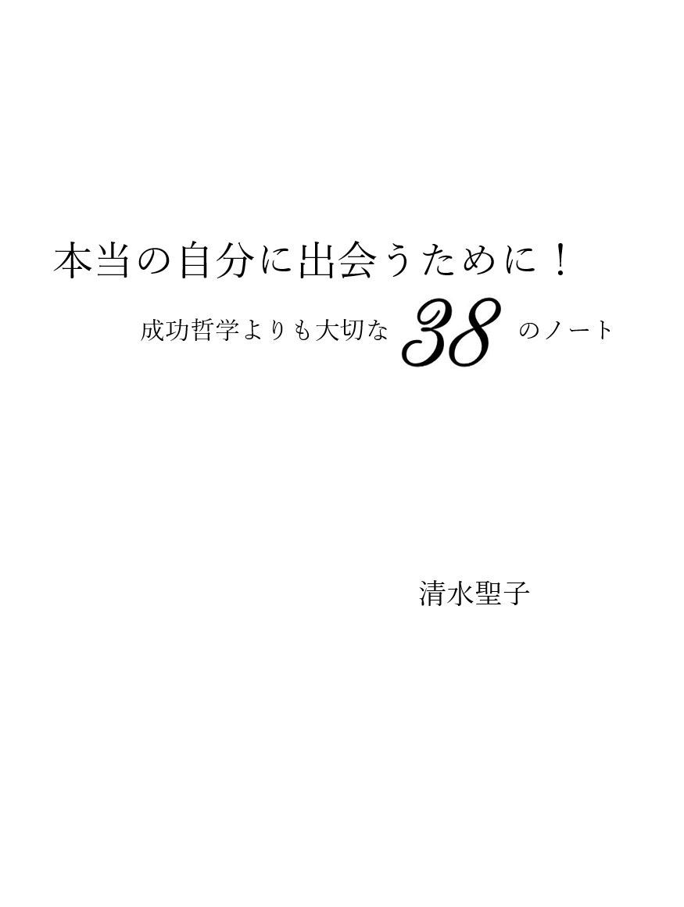
はじめに
こんにちは！ 清水聖子です。
この電子書籍を読んで下さっているあなたへ。本の内容に入る前に、私、清水聖子からお伝えしたいことがあります。
いつも支えてくださる皆さんのおかげで、こうして電子書籍を出版することができました。
まずは感謝の気持ちをお届けさせていただきますね。
日頃からお世話になっている方や、親しくさせていただいている方へ。
清水聖子のセミナーや、先日開催した個人コンサルやバーチャル望年会に参加したよ、ミートアップやカンファレンスで見つけたよ、会ったことがあるよ、という方へ。
会ったことはないけれども、ｆａｃｅｂｏｏｋやＬＩＮＥ＠、その他ＳＮＳで私のことを知ってたよ、メッセージ読んでいますよ、という方へ。
そしてこの電子書籍で初めて私のことを知ったという方へ。
そう......
清水聖子から、全ての方へ！
心を込めて、お伝えしたいと思います。
『本当に、本当に、本当に、ありがとうございます！』
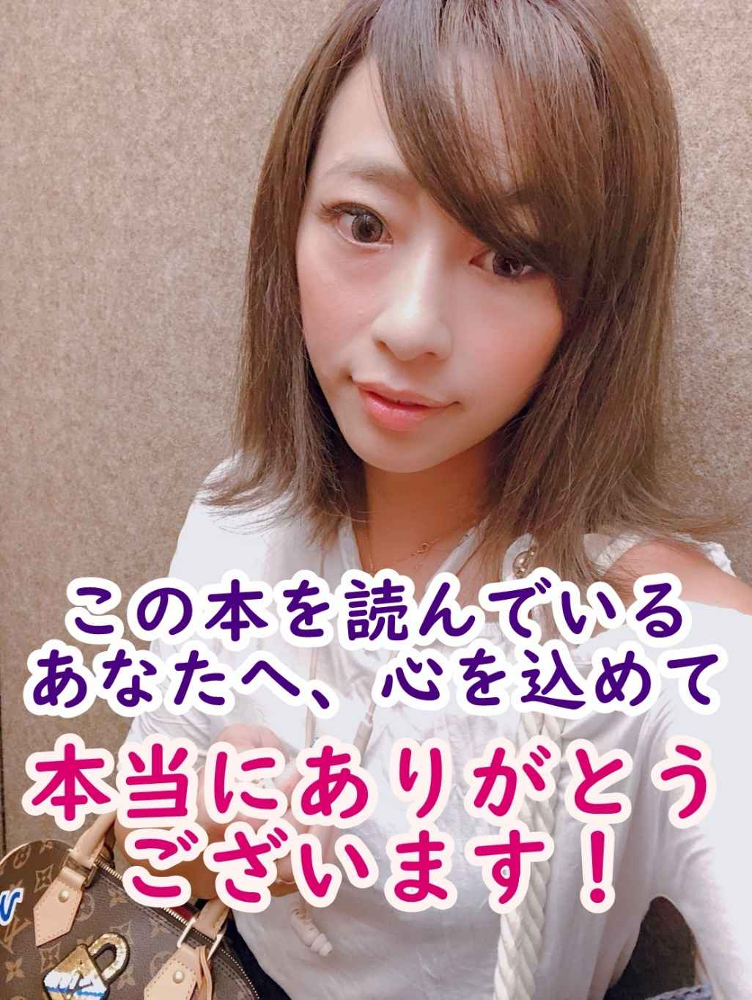
うっかりしてるとすぐに取り残されてしまいそうなほど、巡りに巡り行くこの時代。
この本を読んでいるあなたは、今、どんなことを感じていますか？
どんどん時代が移り変わっていくことを、「さあ、これからいったい何が起きるんだろう？」だなんて思って、楽しみに思っていますか？
それとも、これまでと違う時代になっていくことを、ちょっと怖いな、と思っていますか？
普段私がたくさんの方からいただいているメッセージを読んでいると、おそらく後者の方が多いのかな？と思います。
私は、というと、これからどんどん素敵な時代になっていく！と思っています。
そして新しい時代がとても楽しみになっています！
ですが以前の私だったら......きっと「怖いな」と感じていたと思います。
この本を読んでくださっている誰よりも不安で不安で、恐怖で怯えている以外何もできなかったでしょう。
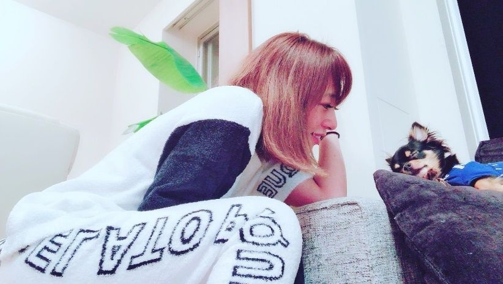
私は生まれたときから家庭が複雑で、中学時代は家に自分の居場所を感じられることはなく、かといって学校に行くことすらもしていないというまさに絵に描いたような荒れっぷり。
自分の弱さから逃げるかのように１６歳で結婚、１７歳で出産。
こんな私でも家庭を持って、幸せな結婚生活を送れるんだ！ と思ったのも束の間、私はその幸せになれるはずの結婚生活が原因でうつになり、今度は結婚生活から逃げるかのように離婚しました。
離婚したら幸せになれる！ と思えたのも、それもやはり一瞬のこと。中学すらまともに行っていない、社会経験もほとんどない、しかもうつ病のシングルマザー。そんな私に周りのみんなが手を差し伸べてくれるほど、世の中は決して甘くはないと思い知らされたのです。
ここで私の人生について詳しくお話しするととても長くなってしまうので、本書の中で少しずつお伝えすることにしますね。
ただ、今の私はとても幸せです。
こんな私が夢と希望を持てるようになり、お金のことで困ることは最近では全くありません。本当に豊かな生活を手に入れることができました。
中学すらまともに行っていなかった私が今では経営者となり、複数のコミュニティを持ってビジネスのことをお話ししているのです。コミュニティ参加人数は全て合計すると８万人！ 自分でもとても驚いています。
かつての私は、周りはみんな敵ばかりで、誰も私のことなんて助けてくれない......そんなことを感じながら生きていました。
今の私の周りには、心から信頼できる人がたくさんいます。私にとって大切な人が何人もいて、そしてこんな私を必要としてくれる人もいるのです。本当にありがたいことだと思います。
最近ちょっとツライことがあって、それは「もう私も、子離れしないといけないんだな......」と感じること。
結婚後の私の悲惨な人生を誰よりも近くで見て来た二人です。母親の姿を見て情けないと思ったことも、きっとたくさんあったんじゃないかなと思います。そしてこれだけ大きく成長すれば、もう、今では母親である私の思い通りになんてなる訳がありません(笑)
自分なりに考えてしっかりと意思を持ち、それぞれの人生を歩んでいます。
子どもには何の罪もない、母親が情けないが為にこの子らを巻き込んじゃいけないと思ってこれまでたくさんのことを乗り越えてきました。子離れしなきゃいけないというのはちょっとツライことだけど、まだまだ必要なときは母親として力になりたいと思うし、子どもなりに母親の後ろ姿を見て立派に育ってくれたというのは本当はとても嬉しいことなんだとも感じています。
こんな人生の大逆転劇を起こせるなんて、なんだかものすごいことをしたように思えるかもしれません。そうですね、振り返ってみると確かに、決して楽なことばかりではありませんでした。「もう、ここで逃げちゃいけない、私はもう逃げない」と思って歯を喰いしばって乗り越えてきたこともたくさんありました。
が、すごく難しいことばかりやって来たのか？ というと、それはちょっと違います。
やってきたのは、至ってシンプルなことばかりでした。
そしてそれらのことは、シンプルだからこそ......以前の私だけでなく多くの人が、うっかり後回しにしてしまっていることなのかもしれません。
今になったからこそ分かる、とても大切なこと。
だからこそ、「これからの時代、不安なこともあるけれども、しっかりと生きていきたい。幸せに成功したい！」って思っている全ての人に伝えたいこと。
それは......そう！
【この電子書籍を読んでいる、他の誰でもないあなた】
のようなに伝えたいこと。
それらを『本当の自分に出会うために！ 成功哲学よりも大切な３８のノート』として、今回まとめてお届けすることにしました。
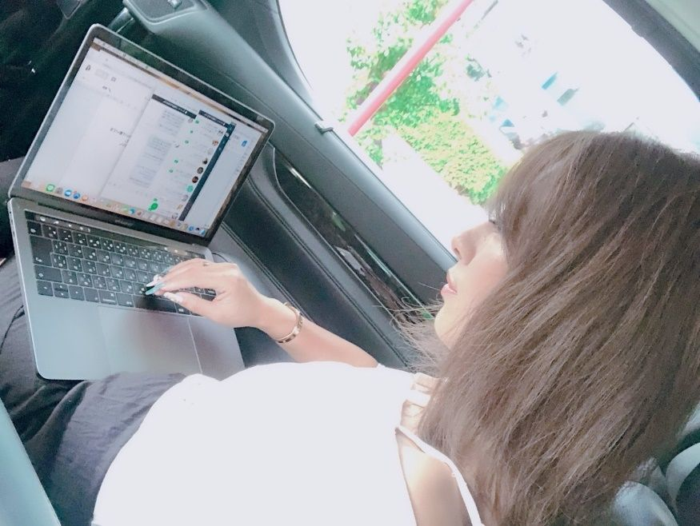
私が人生の大逆転劇を起こすためにやったことと言えば、徹底的に自分と向き合ったこと。
これが何よりも大きかったんですね。
今の世の中には「成功哲学」と呼ばれている書籍も山のように出て溢れていますね！
それらは本当にとても素晴らしいものばかりなのですが、ただ読んでいるだけになっている人、なかなか結果が出せていない人が多いのも、紛れもない事実かなと感じています。
そうではなく、ちゃんと「じぶんごと」として捉えて欲しいと思うのです。
この本は、あなたに私がいろんなことを聞かせていただきながら進んでいきます。その質問の合間に、これは大切だなと思うことや、私自身がこれまでの人生で経験したことや感じたこともお話ししていこうと思います。ただ、それは上から目線で教えてやろうとか、決してそんな気持ちではありません。
一人で自分に向き合うのはなかなか大変なこともあると思います。そんなときにお伝えする私のお話で、あなた自身のことや、この大変な時代を生きていくためにとても大切なことにたくさん気付いて欲しいと思うのです。
さあ、本を読み進める心の準備はできましたか？
と、言うとなんだか身構えてしまったかもしれませんね。いえいえ、必要なのは、ほんの少しの勇気だけ！ そしてそれは、この本を読むときだけに限った話だけではありません。
ほんの少しの勇気が、あなた自身の望んだ素晴らしい場所へと連れていってくれます。
一歩踏み出せないのなら、半歩でもいい。
半歩、半歩、半歩、半歩......
あまりに怖気ついて「一歩」にも及ばないような、ほんの「半歩」の積み重ね。
ときには休んでしまったり、思わず引き返してしまうこともあるかもしれませんね。それでも「半歩だけ踏み出す」というのを繰り返していけば、それは着実に前に進んでいくことになりますよね。
その半歩の積み重ねで、前だったら考えもしなかったような遠い場所へ行くことができるのです。
あと、半歩だけでも進もう。
あと、半歩だけでも進もう。
あと、半歩だけでも進もう。
あと、半歩だけでも進もう！
そんな気持ちであなた自身と向かいながら、１ページ、１ページと読み進めて行ってくださいね。
清水聖子
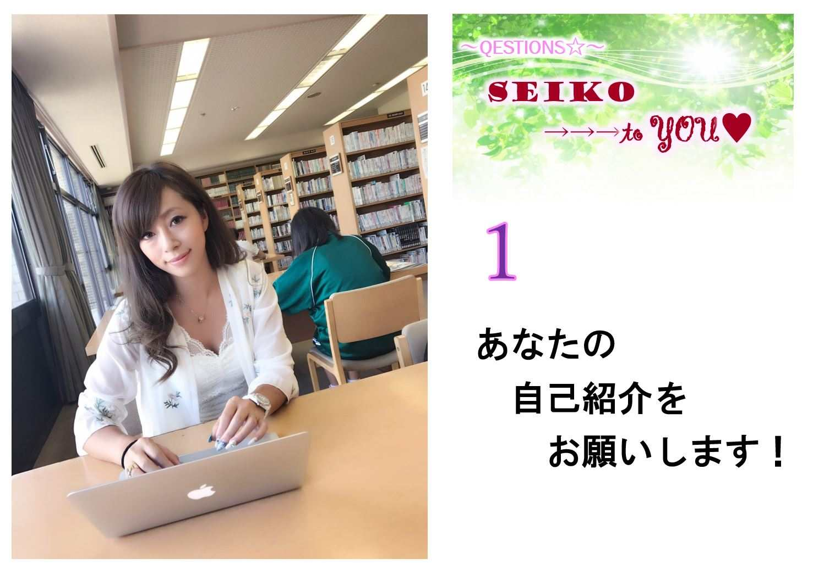
１ あなたの自己紹介をお願いします！
「え、自己紹介？」最初の質問で拍子抜けしちゃった人もいるかもしれませんね。
「一体なんの意味があるんだろう？」と思った人もいるでしょう。
よく分からないから、もう、どんどん前のページに進もうかな、と思った人も......ここは一歩立ち止まって！
ここでの自己紹介のやり方を説明しますね。まずは１枚紙を準備してください。
Ａ４くらいがちょうどいいかな？ と思いますが、絶対にＡ４じゃないとダメということじゃなくて、手元にある紙で構いません。何かの紙の裏面なんかでも問題ありません。
そして、あなた自身のことをいろいろと箇条書きして欲しいと思います。
もし可能であれば、これは２人以上でやると楽しいですよ！ お互いが自分のことを書いて、後でお互いが書いたものを見るんです。
以前私のあるコミュニティで、同じようなことをやってみたことがあります。
そのときもやってみた感想をたくさんの方が送ってくれました。中でも、子どもと一緒にやってみたという人からは、子どもならではの珍回答が続出！
「そんなものが好きだったの？」だなんて、大人が思いも寄らない発想が子どもからはどんどん出て来るものです。私もいただいたメッセージを読んで笑っちゃいました。
とは言っても、一緒にやる人が見当たらず一人でやるという人もきっといるでしょう。そのときも、誰かに自己紹介をするつもりで！ ただ、文章にしてしまうと「ちゃんとやらなきゃっ！」って感じになってしまうので、箇条書きで構いません。いつか誰かに、この書き出した項目をもとに自己紹介すればいいんだな、と思うようなイメージで書いてください。
Ａ４くらいの紙がいい、とお伝えしたので、書きたいことをどんどん挙げていくことができますね。ですが別に誰かと競っている訳でもないので、無理してありもしないことを書き出すようなことは、しなくても大丈夫ですから。
私のことをよく知っている方だったら、「聖子さーん！ 聞いて聞いて！」みたいな気持ちでやっていただくのも、もちろん大歓迎です！
清水聖子でなくても、自分の身近にいる大切な人や、まだ会ったことのない憧れの人に自己紹介するような気持ちで書いてみるのはオススメです。よりリアリティが出ますからね。
私のコミュニティにいる方や、あとは最近ではいろんなワークショップに参加している人も多いので、似たようなことをやったことがある人もいると思います。そんな方でもこの機会に、ぜひもう一度やってみてください。きっと前と全く同じにならないはず。
詳しくは後ほど解説しますが、再度やることでまた大きな気付きがあり、学びになるはずですからね。

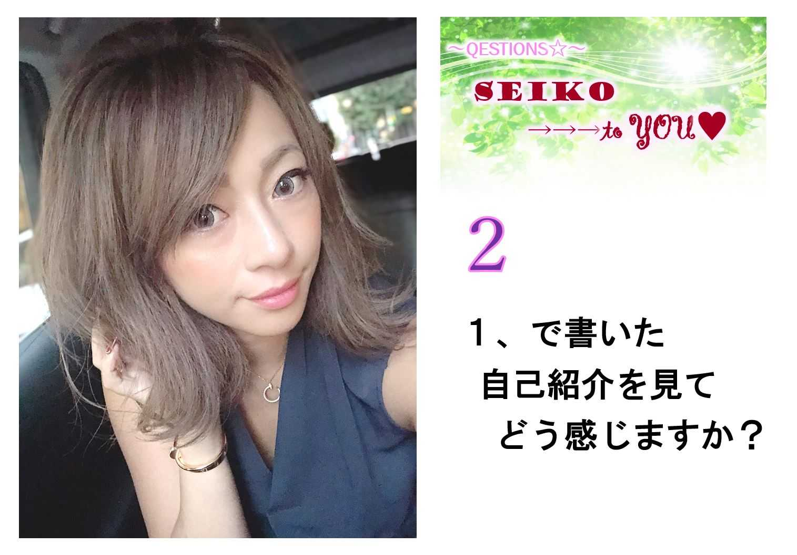
２ １、で書いた自己紹介を見てどう感じますか？
さて、目の前にある自己紹介の紙を見てみてくださいね。
そこには、どんなことが書いてありますか？
ここで、なぜ最初に自己紹介を書き出す、なんてことに取り組んでいただいたか、お話ししたいと思います。
こうした「自分と向き合う」「自分の内側のことに目を向ける」ということをすると、人によっては考え過ぎてしまって、視野が狭くなってしまって、「自分には何もない......」だなんて思ってしまったりもします。
もしくは「自分には無限の可能性があるはず！」だなんて妙に力んでしまって、あれも書かなきゃ、これも書かなきゃ、と思ってしまったり。よく考えると別に思ってもないことなのに「素晴らしい目標や夢を掲げなきゃ！」とありもしないことを思い浮かべては、それが自分の本当の願いであるように錯覚してしまったりも......
でも、「自己紹介」、という形ではじめると、意外とすんなり自分自身のことについて、いろんなことが出て来たのではないでしょうか？ そしてそこにあるのは、紛れもない、
【あなた自身の現状】
なのではないでしょうか？
さて、あなたの現状は、どうなっていますか？
もしかしたら過去にあったことや、将来のことをたくさん書いた方もいらっしゃるかもしれませんね。そんなことも全てひっくるめて【あなた自身】、ですよね！
あれ？ そう思うと、あるときは周りのいろんな人と比べて、またあるときは自己啓発の本やセミナーで知識をつけては「自分には何もない......」と劣等感に打ちひしがれていたけれども......
目の前の紙には、たくさんのことが書いてあるな、自分には何もない、と思っていたけれども、自分には何もないというのは単なる自分の思い込みだったのかもしれないなぁ......そんなことを感じた人もいると思います。
もしくは、今の自分の現状を見てみて、「思ったよりちっぽけだな」なんて感じてしまった人もいるかもしれません。
そして「こんなちっぽけな自分でも周りに支えられて自分がいる。だったらこれからは今以上に、周りの人に感謝しながら生きていこう！」と感じた人もいるかもしれませんし、「やっぱり、こんなにちっぽけなままじゃ嫌だ！ 大変なこともあるかもしれないけど、もっと大きな自分になるためにいろんなことにチャレンジしたい！」と感じた人もいるかもしれませんね。
大切なのは、今の現状を自分で見てみて、そしてどう感じるか？ ということです。
どれが正解、なんてことはないんです！ あなたが感じたこと、その全てが正解です。
ここでは優劣も正解不正解も何もなく、ただただ、今の自分について感じることを、素直に自分のハートで受け止めてくださいね。
■□■━━━━━━━━━━━━━━━
□■┛ 聖子のおしゃべりガチトーク☆
■┛━━━━━━━━━━━━━━━━
私には、何もなかった......
さて、「自己紹介と言われても、素晴らしいことなんて何ひとつ出て来なかった......」そんなことを思っている方もいらっしゃるかもしれないので、私自身のお話をしたいと思います。
もし、同じワークを以前の私がやっていたら、きっとこの本を読んでいる誰よりも、「こんなにも何もない自分」を突き付けられて唖然とするしかなかったでしょう。
私が書けることと言えば、小学校の２年生までは函館にいた、とか、その後は京都で育った、とか。
家族は、息子が二人と、猫のトッティ。最終学歴なんて、中学もまともに行ってないくらいだから事実上は小卒、でしょう。
もし書くとしたら、自己紹介のはずがいろんなことを思い出してしまって、目の前の紙に恨みの感情を書き殴っていたかもしれません。
私がこんなめちゃくちゃな人生になってしまったのは、本当に大好きだったお父さんと生き別れにならなきゃなかった悲惨な運命のせいだ、京都に来てからしばらくは家にも学校にもどこにも居場所がなかったせいだ、そうじゃなかったら中学くらいちゃんと行けたはずなのに！元夫には結婚してからもちゃんと私のことを見て欲しかったのに、なぜこんなことに......
ただ、そうであっても、素直にこう感じていたと思います。
「もう、このままじゃイヤだ......」
その、「このままじゃイヤだ」という感情がなければ、今の私はいなかったと思います。
それは決して綺麗で美しいものではないのかもしれない。それでもこうして自分の手で自分なりの「豊かさ」を手に入れた私は、今ではたくさんの人に囲まれていろんな人を幸せにすることができています。素敵な出会いが日々あって、多くの感謝のメッセージや声もいただいています。
だからあなたも、無理して自分を偽ろうとする必要もないし、湧き出た感情は素直に受けて止めて欲しいな、と思います。もし自分には何もない、と思ったとしても、大丈夫。私も自分には何もないと感じてしまっていた一人だから（苦笑）
それよりも自分の感情に蓋をして、目を背けてしまうような人の方が私は心配です。
本当は「このままじゃイヤだ！」って感じているのに、妙にクールぶって、周りの目を気にしながら、誰にも叩かれないようにして生きている人っています。それじゃあ成功することもできないし、自分の感情を偽っている訳だから、自分の心からの幸せを感じることもできなくなってしまうんですよね......
そんな「死んだような目をしている大人」が増えているのを見ると......子どもたちはこれから、そんな大人ばかりの世の中で生きていくことになるの？なんてことが頭の中をふとよぎり、ゾッとするんです。
自己紹介の紙に書いてあることは、どんなものであってもあなたにとって正解です。そしてそれを見て感じること、その感情を「こんなこと感じちゃいけない！」なんて思わずきちんと受け止めて欲しいと思います。
さあ、自分の感情、素直に受け止めることができましたか？
心の整理ができたら、また次のページへと進んでいきましょう！
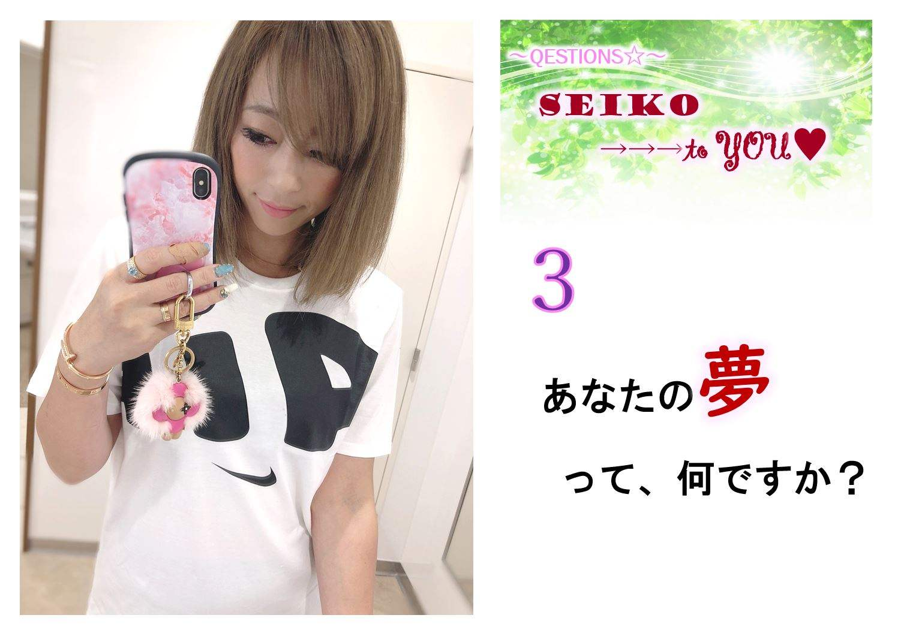
３ あなたの夢って、何ですか？
私もある人に言われたんです。「あなたの夢は、何ですか？」
こんな当たり前みたいな一言が、私の人生を大きく変えてくれました。
私がここであれこれ言うよりも、まずはあなたも、自分の中にある正直な答えを探してみてくださいね。
何が正しい、間違っている、なんてことは一切ありません。
あなたの夢って、何ですか？
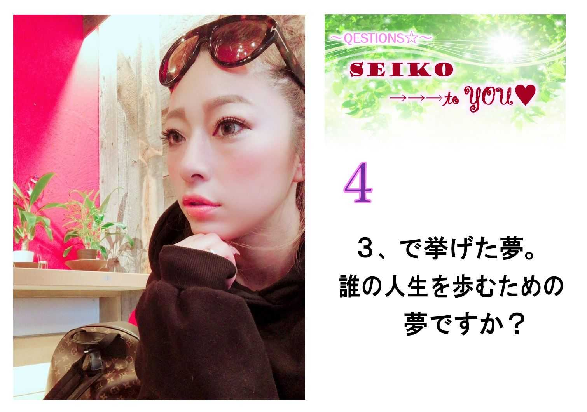
４ ３、で挙げた夢。誰の人生を歩むための夢ですか？
「誰の人生を歩むための夢ですか？」
......んん？ それってどういうこと？
一瞬、ピンと来なかった方もいるかもしれませんね。
さっきの「夢は何ですか？」というのは、私が生活保護を受けていたときに出会った社長から言われた言葉でした。
子どもが二人いて、シングルマザーができる仕事なんて全然なくて、やっと就いた仕事も完全に自分に合わなくて、うつ病はひどくなるばかりで、薬も合わなくて副作用で道端で倒れて、もう生活保護を受けないと親子で生きていけない状態に。
でも、生活保護って、やっぱり何もぜずに受けていいものでもないんですよね。
全国で全部そうなのかは分からないけれども、私がそのとき住んでいた所の場合は、仕事に就くことに前向きにならないと、そもそもずっとは生活保護は受けられない、ということになっていました。
で、「仕事をするなら、パソコンくらいできなきゃな」と思って、ハローワークの職業訓練のパソコン教室に通うことにしたんです。
そこの講師の社長が、実はパソコンの話を全然、と言ってもいいほどしないんです。助手の先生がパソコンについての講義は主に担当。パソコン教室のはずなのになんだか変わってる。
そして社長が話してくれたのは「自己啓発」「マインド」の話。その話を聞いていなければ、今のように元気な私は絶対ここにいなかったでしょう。
「あなたの夢は何ですか？」と聞かれたとき、私は言葉に詰まって、そのときは「子どもが自立することが夢です」と答えました。
そのとき社長に言われたんです。
「その夢、辞めなさい。子どもは子どもの人生を歩むのであって、あなたが子どもの人生を歩むのではない。あなたは自分の夢を見つけなさい」
そう。いつの間にか私は、自分の人生を全然歩んではいなかったんです。
今でも私にとって、二人の子どもは本当に大切な存在です。でも、私の人生、全部が全部「子どものために私は生きる」ということになっちゃいけない。そんなの自立していないんです。自分の足でしっかり立てていないと、マイナスの状態からあらゆることを立て直していくのは、やっぱり難しい。
自立していないって、ぱっと見はちゃんと立てているように見えても、実はふわふわしていて、全然力が入っていないんですね。
そのときは衝撃で、自分と子どもを切り離された気がして、でも自分の夢なんて考えても考えても分からなくて、分からない自分が情けなくて涙が溢れました。
今では私のもとにたくさんの方からメッセージが届きますし、日々いろんな方にお会いします。そのような中で思うのが、「自分の夢、と言いながら、実は自分じゃない誰かの人生を歩んでいる人、そんな夢を語っている人って、かなり多いんじゃないのかな？」ということ。
以前の私のように、「誰かが立派な人生を歩んでくれさえすれば、私はそれでいい。それが私の夢」という間違った思い込みをしてしまっている人も。
あとはそうですね、『他人の評価』を気にして、それが自分の夢になっている人も多いように思います。
例えば「マイホームを建てたい」という夢。
マイホームそのものを否定するつもりは、全くないですよ！
マイホームを建てる！ という明確な目標や夢を持って、そのために日々の仕事を頑張る、その原動力にするというのはとても素晴らしいことだと思います。
ですが、別に「こんな家にしたい！」という思いもないし、マイホーム、と聞いてもぞんなにワクワクもしないし......
よくよく聞いてみると、その人が勤めている会社では「マイホームを建てる」というのが一種のステータスみたいなことになっていて、入社〇年目で、××という肩書を持ったら、マイホームくらい建てるよね、という暗黙の了解みたいなものがあった。
だから、自分も建てなきゃな、と思って「マイホームを建てたい」という夢を持つようになった......こうしてじっくり見て行くと、「それって、自分の夢とは言えないんじゃないのかな？」と思ってしまいますね。
でもですね、意外と多いですよ。自分で決めていること、自分の夢だと思っていることが、実は他人を基準にして描いていただけのものだった、なんてこと！
３、で挙げた夢。それはあなたが「本当に実現したい！」と思える、あなた自身の夢ですか？
ここで立ち止まって自分自身に聞いてみることにしましょう。
「そうそう、これは私の本心から、願っている夢なんです！」という人！ その夢がどうか実現できますように！
ちゃんと自分自身の夢、持っているよ！ という人も、
「あれ？ そう言われてみると、何だか違う気がする......」という人も、
「いえ、そもそも夢なんて、描くことすらできなかった......」という人も！
この先の内容を読み続けていると、また新たに見つかることが、きっとたくさんあるはずですからね。
あなたの夢は、あなた自身の人生を歩むための夢ですか？
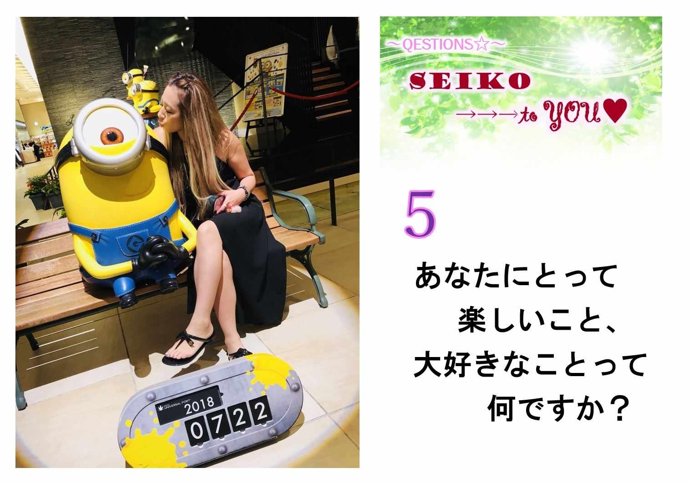
５ あなたにとって楽しいこと、大好きなことって何ですか？
例えば私はディズニーが大好きなんです！
「なんで？」って聞かれたら......いろいろと理由はあるけれども、でも最終的には「好きだから」としか言えないんですよね。
あとはそうそう！ 私、トイレ掃除が大好きなんです。変わってるって言われそうですけどね。
仲間で集まって、街の公衆トイレを回ってもう徹底的に綺麗にしていくボランティア団体をつくったんですが、この、何ものにも代えられないやり遂げた感！！ これがもう、すっっっごく楽しいんです！
はじめたきっかけは、ビートたけしさんが「トイレ掃除をするとお金持ちになる！」というのを真に受けたから(笑)
でも、ビートたけしさんが言ったことだからずっと楽しんでいる、というよりかは、いざ自分でやってみたら楽しかった！ 楽しめている自分がいた！ やりがいを感じた！ ということ。
何をするにも一番最初のきっかけには、他人が大きく影響する場合もあるかもしれないですね。でも何かをはじめてみたら、その後にそれを自分が「楽しい！」って感じるのか、「大好き！」って思うのか。
そこにはもっともらしい理由だとか、他人の評価だとか、自分の名誉だとか、そういうのって関係ないと思います。だって、感じるのも、思うのも、「私自身の心」ですからね。
小さいときはマンガが大好きで、でも親が反対してたから買えなくて、大人になってからその反動が出てマンガを買い漁り読み漁り、家が何百冊ものマンガで埋め尽くされている、そんな大人も結構いるようです(笑)
身近に自分の「大好き」を止めてしまう人がいたら、それに従わなきゃいけなくなることも多いのかもしれません。あなたにも、もしかしたら心当たりがあるのかもしれないですね。
それが一時的なもので、それでも自分の中の「大好き」の気持ちを忘れずにいられた人もいます。その一方で、自分の気持ちにフタをしてしまうのがすっかり当たり前のことになってしまって、何が自分にとって楽しいのか？ なんてことも自分自身でよく分からなくなってしまっている人は、かなり多いように感じています。
自分にとって「大好き」が分からないから、他人にとってどう思われるかが、自分の全て。自分が何を感じるのかも、知らず知らずに他人を気にして決めてしまう。
「仕事に一直線のサラリーマン」になってみたり。本当に仕事が大好きならいいんです。
でも「自分の体裁を保つために仕事に一直線になっている」のだとしたら、それは問題だと思います。そういう人って自分の感情を押し殺して暮らすのが当たり前になっているから、周りの人のいろんな感情にもものすごく疎くなってしまっています。むしろそんな感情をきちんと出して生きている人に苛立ったりもしてしまいます。
楽しそうにしている人を見て「なんてくだらない......」なんて思ってみたり、ひどい場合は奥さんが「一人で育児をするのが大変で疲れてしまって、今すごくツライ」と言ってるのに「そんなワガママ言うな」なんて言って突き放してしまったりも。
そんな人から「自分が本当はどうしたいのか。何がしたいのか。自分でよく分からなくなってしまいました」なんて声があちこちで上がってきています。たくさんの人が心の悲鳴を上げて来ているように感じています。
他人の評価は関係なく、あなたにとって楽しいこと、大好きなことって何でしょうか？
今はすっかり分からなくなってしまった人は、「楽しかったこと」「大好きだったこと」を思い出してみてもいいかもしれません。
楽しいと感じるのにも、大好きだって思うのにも、理屈やもっともらしい理由なんて要らないですから。あなたが楽しいって思えば楽しいし、あなたが大好きだって思えば大好きなことなんです。
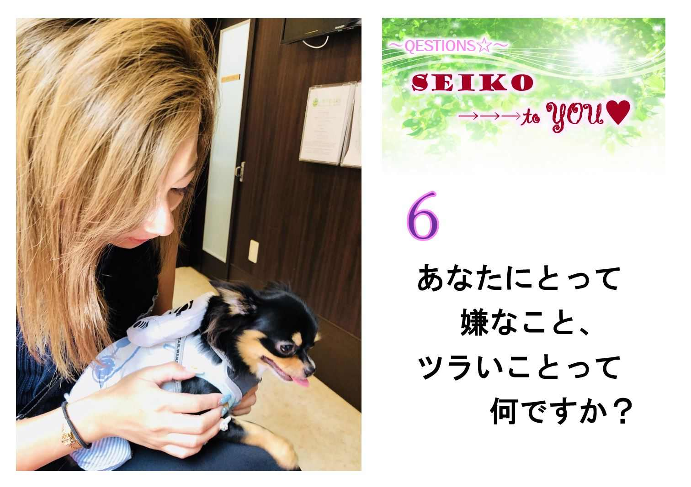
６ あなたにとって嫌なこと、ツラいことって何ですか？
ちゃんと自分の「嫌だ」「ツラい」を感じるのも、本当はとても大事なこと。
ときに、どんなに嫌なことでも、ツラいことも、苦しいことも、そんな感情は無視して飲み込んで、ひたすら目の前の困難を乗り越え続けることが重要だ！ という人もいますね。
確かに腹を括って何かをやり遂げることが大切なことってあります。が、それってその向こうに自分が成し遂げたいことだったり、どうしても掴みたい夢があるから、ツラいことよりもそれ以上に自分が手に入れたいものがあるから、というのなら分かります。
その前に、闇雲に自分の「ツラい」「嫌だ」の気持ちまでも押し殺し続ける必要もないんじゃないかな、と思うんです。「大好き」の気持ちと同じで、ツラいものはツライし、嫌なことはやっぱり嫌だ。
自分にとって何が嫌なのか分かることで、逆に自分にとって大好きなものが分かると思います。そして、自分にとって嫌なことが分かっているから、大好きなことにもっと一生懸命になろう、自分の人生はちゃんと大好きなことに集中しよう、自分の「大好き」をもっともっと大切にしよう、と思えるんです。
ここでも周りの評価は関係ありません。あなたが嫌だって思うこと。ツラいと思うこと。
人間なんだから、そんな負の感情もあるのが当たり前なのですから。
■□■━━━━━━━━━━━━━━━
□■┛ 聖子のおしゃべりガチトーク☆
■┛━━━━━━━━━━━━━━━━
どうしても耐えられなかったこと
私にとって辛かったことをここでひとつ挙げるとしたら、病院で働いていたときのこと。
看護助手をしていた母から声をかけられて、その病院で働くことになったんです。
私は......たくさんの人が、人生の最期を迎えるところで仕事をすることに。
そこでは人手が足りていなかったので、本来ならちゃんと資格がある人でないとどうやらできないような仕事も、私がすることになりました。
本当に、「植物人間」という表現がぴったりなような、生きているのか死んでいるのか分からない患者さんばかり。そして病院も人手が少ないのが原因なのか、どう見ても人を人と思ってもいないような酷い扱いになってしまっている。例え相手がもう人間らしい生活なんてできない患者さんだとしても、優しい言葉で接するなんてとてもできない余裕のない人ばかりで、周りから聞こえるのは暴言だらけ。
目の前で次々に患者さんが亡くなっていく。さっきまでご飯を食べていた、と思っていた人が次の瞬間にはもう死んでいる。そしてその処置を私がすることになるけれども、一刻も早く処置しないと、その遺体を綺麗なままご遺族に引き渡すことができないんです。
と、いうことは、死んだ人の体ってとてもとても綺麗なものではないということ。
その死体を触った自分の手で、子どもたちに触れるのが嫌で嫌でたまらなくなりました。
このとき私はストレスで過食嘔吐になりました。
中学もまともに行っていないシングルマザーができる仕事なんてそんなにないのだから、仕事だと割り切ってできれば良かったのかもしれません。実際、そういうことができる人がその病院で働いていました。そして、ここでの仕事って本当に大切なこと。頭では分かるんです。理屈としては、理解できるんです。が、私にはずっとそこで働き続けることは無理でした。
そして、「私には無理」という気持ちをどうにかしてその仕事をしようとしても、「ツラい」という気持ちはそのまま体に出てしまいました。
根性論で、ツラいことを乗り越えようとしても、ダメなものはダメなんです。
とは言っても、そのツラさを感じているあなたが悪いわけじゃないから。
ただ不満や愚痴だけをこぼしているというのと、ツラいことをツラいとちゃんと受け止めるのは、また別物だから。
自分らしさを見つけるためにも、自分の中から湧き出る「嫌だ」「ツラい」の気持ちも、ちゃんと大切にして欲しいなと思います。
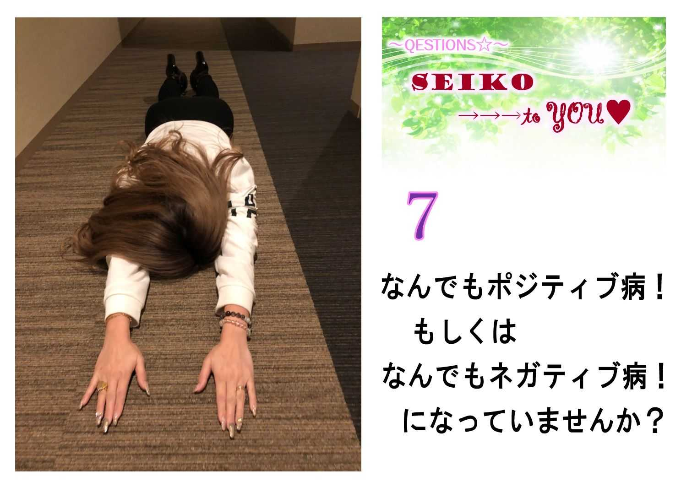
７ なんでもポジティブ病！ もしくはなんでもネガティブ病！ になっていませんか？
な、なになに！？「なんでもポジティブ病」「なんでもネガティブ病」って......
そんなそんな、倒れちゃうって、なんとも大袈裟な！
そう思った人も多いでしょう(笑)
まあまあ......まずは「なんでもネガティブ病」から説明することにしましょう。
何から何まで、文句ばかりの人。あなたの近くにいませんか？もしくは今までの人生でいませんでしたか？
仕事終わりに、そういう人同士でカフェや居酒屋さんに行き、愚痴や文句のオンパレード！ それも、毎日毎日......それがストレス発散だという人もいます。
でもね、そういう人をちょっと冷静に眺めてみると......
仕事帰りに愚痴をこぼしてストレス発散するために、仕事中にありとあらゆる不満を見つけているような状況に陥ってしまっている......こういう人が多いんです。
「え？ 仕事に不満があるから、仕事帰りに愚痴をこぼしているんじゃないの？」
いえいえ、よく見るとそうじゃない。
「仕事帰りに愚痴をこぼして盛り上がるために、仕事中に不満を探している」んです。
「〇〇さんのせいで、自分はこんなにも大変」と話すと、「そうそう、〇〇さんのせい！ オレもそう思う！ オレたちみんなひどい目にあっててお先真っ暗だぜ」だなんて言って、賛同してくれる人がいる。
で、その〇〇さんが辞めてしまったり、異動になると、今度は「全くもう、△△さんが......」と、別の人の愚痴大会。なんか、そういうの、うんざりしませんか？
そりゃあ、そうですよね、もっともらしく誰かの愚痴や不満を言っていると、その人のことを闇雲に批判したりなんてできないから。うっかり自分に飛び火してもイヤだし。
そして誰かを批判していれば、優越感にも浸れますからね。自分の方がすごい、自分の方が正しいって言う。集団で誰かを批判しているのなら、なおさらです。
そうしていると......誰も何も言えなくなって、その人は置いて行かれます。
はい。やっぱり、そういうことですよね。
大切なことを、誰も教えてはくれなくなるんです。
本人たちはそれに気付けないから、今日も明日も何か不満を見つけたり、誰かを標的にしては、イラだって愚痴大会で盛り上がって、何の進歩もない毎日を送るしかないですよね。
一時的には、そちらの方が遥かに楽ですから。
でも、何か不満や愚痴があるのなら......ちょっとでも、「自分にできることはないのかな？」と思って、改善しようとしてみませんか？
それをしないのは、なぜ？
何か今までにないことに取り組んで、失敗するのが怖いから。
先陣を切って改善に乗り出す勇気がないから。
大変な思いをしている人に手を差し伸べる器の大きさがないから、ではないでしょうか？
「そんなの、私の仕事じゃないし」と言って何もしないのなんて簡単です。きっとそれが分かっているから愚痴大会から降りれないんです。失敗が怖い、勇気がない、器が小さい。
そういうのって、意外と、心の奥の、奥の奥の方では一番本人が分かっているものですから。たくさんの方にお会いしてきて、私はそう思います。
でも、いったん「なんでもネガティブ病」になってそれに「依存」してしまうと、なかなかそこから抜け出すのは難しい。
それと真逆のようだけれども、「なんでもポジティブ病」じゃないかな？ なんて人も最近では増えているように感じます。
今の時代、経済的不安がどんどん膨らんできて、その影響か「自己啓発」に取り組む人が増えてきました。そこではよく言いますよね。「いつもポジティブでいましょう」って。
ですが、そのポジティブを履き違えちゃいけない！
本当は嫌なのに、本当はツライのに、その感情を押し殺して、いつもポジティブ。
......そこまでいくと、なんだか、人間じゃないみたい。
大きな失敗をしたとしても、スーパーポジティブ。
人に迷惑をかけているのに、周りを巻き込んで大変な目にあっているのに、目の前の誰かが「これじゃあもうツラい」というのが分かっているのに、スーパーポジティブ。
それは自分が「ポジティブ」以外の選択肢を無理に押し殺しているから、周りの「ツライ......」という感情にどうしても疎くなってしまっているようにも思います。
いや、失敗したのなら、反省くらいしましょうよ。引きずってしまうのは良くないけれども、一瞬の反省すらしない、だから改善することだってできないというのは考えもの。
人に迷惑をかけたのなら、謝りましょうよ。それじゃあ周りの人がみんな離れていくのは当たり前です。
それに、「全てがポジティブ」だから、何が嫌なことか自分で分からない。だからこそ、「何が本当に、自分が心の底から大好きなことなのか」さえも、感じることができないんですね。
自分が心の底から大好きなことに取り組むことができない、夢中になれるものがないのであれば、残念ながらやはり結果もそんなに大したことになりません。
全てがポジティブって、一見するといいようで、大好きなものが見つかっていない、突き抜けることができる何かが見つかっていないということ。
もちろんポジティブなことは大切です。私が日頃皆さんにお届けしているメッセージなどでもお伝えしています。
ただ、自分の「ネガティブ」の感情を見つめることなく「なんでもポジティブ病」になってしまうのは痛い。
自分のネガティブな感情も、誰かのネガティブな感情も、一瞬でも受け止めることができないのは、失敗が怖い、勇気がない、器が小さいから、ではないかと思うんです。
......あれ？
「なんでもポジティブ病！」になってしまうのも、「なんでもネガティブ病！」になってしまうのも、根っこの原因は同じなのかも？
自分の弱さを認められていないから。弱い自分を愛せていないから。
だから、「スーパーポジティブ」や「スーパーネガティブ」で自分の心の周りを鎧で覆うことで、自分を守るしかない。それで一時的には守られるから、依存してしまう。
でも、私はそんな人を攻撃するためにこの文章を書いているのではないですよ！
誰よりも弱くて、その弱さからずっと逃げ続けていたのが、私、清水聖子ですから。
あなたは、なんでもポジティブ病！ もしくはなんでもネガティブ病！ になっていませんか？
もしそうだとしたら、自分の大好きなことも、嫌だってことも、ちゃんと自分の中から湧き出る感情を受け止めること、もっと大切にしてみませんか？
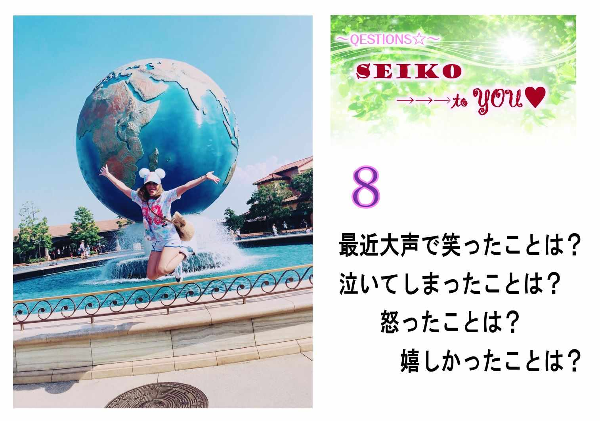
８ 最近大声で笑ったことは？泣いてしまったことは？ 怒ったことは？ 嬉しかったことは？
最近、笑ったり、泣いたり、怒ったり、嬉しかったり......そんなことって、ありましたか？
「全く思い浮かばない......」という人は、要注意！
５、６、でも大好きなことや嫌なことがよく分からないなって思ったし、ここでも、何も思い出せない人は、自分自身の気持ちと向き合うことから遠ざかり過ぎているのかもしれませんね。
自分の気持ち、なのに、もう、自分のことじゃないみたいになってしまっているのかも？
おそらくこの本を読んでいるあなたは、心のどこかで「成功したいな」と思っている方だと思います。そして、「成功することで、幸せを手に入れたいな」とも思っているのではないのでしょうか？
ただ、自分の気持ちさえも自分で分からなくなってしまっていたら......成功したとしても、全然自分の中から湧き出る「幸せ」を感じることができません。
成功しても、何か虚しいだけ。
だから、もっと成功すれば、達成感を得られるのでは？ もっと上を目指せば、そこに幸せがあるのでは？ と思って......無茶なことに手を出してしまう人もいます。
周りから見れば、それだけの成功を手に入れたら充分幸せだと思うのに、それでは心の奥の寂しさを埋め合わせることなんてできなくて、どう見ても博打にしか見えないようなことに手を出してしまう......結果、身を滅ぼしてしまう。大事なものを全て失ってしまう。
そんな人も、私は何人も何人も見て来ました。
でも、そんな成功なら、手に入れない方がまだいいですよね。
そうじゃなくて、私はあなたには、幸せに成功して欲しいと思います。
だから、ここで自分の気持ちや自分の中から湧き出る感情と、もっと向き合うようにして欲しいなと思います。
ここ最近、そんなこと、全くなかったな、という人。それは、今気付けて良かったことだとも思います。今気付けなければ、この先も一生、自分の心を置いてけぼりにして生きていた、とういことですから。
これからはもう少し、丁寧に自分自身と向き合うようにしてみませんか？
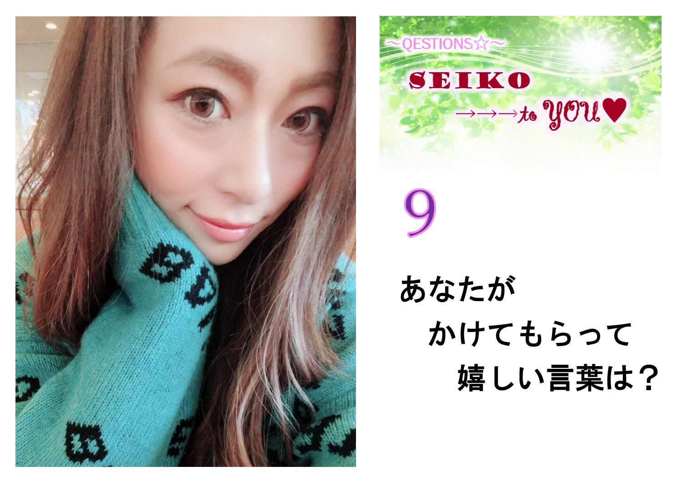
９ あなたがかけてもらって嬉しい言葉は？
「誉め言葉なら、私、何でも喜びます！！」という人もいます。そうそう、それもきっといい！！
でも、例えば職場で、
「あなたがいると、職場の空気が明るくなっていい！ いつもありがとう」と言われるよりも、
「あなたがいたから、今回目標を達成することができたよ！ いつもありがとう」と言われた方が、私嬉しいな......そう思ったとき。
あ、私、仕事で成果を出すことをかなり大切にしていたんだな、そんなことに気付くきっかけになるかもしれませんね。
職場の空気が明るくなっていいのなら、そういうことにも自信を持ってみようかな、それもまた新しい自分なのかな......そんなことも思えて来たとしたら、未だ自分でも気付けなかった素敵な自分が見つかりそうですね！
私、本当は、こういうこと褒めてもらいたいのにな......そんなことを思う人もいるでしょう。そんなことから「あ、自分は本当は、こんなこと思っていたんだ」と、いろんなことに気付けるはず。
本当はかけて欲しい言葉。周りの人から見て欲しい自分はどんなこと？
試しにネットで「誉め言葉 リスト」と入れて検索してみると、山のような誉め言葉が出てきました。あなたも良ければ検索してみてくださいね。その中から、自分がかけてもらって一番嬉しい言葉って何だろう？
そんなところから、今まで自分で気付けなかった自分に気付いてみましょう！
１０ あなたが得意なこと。当たり前のように他人よりできること。どんなことがありますか？
私だったら、めっちゃ元気なこと！！
「え？そんなことでいいの？」と拍子抜けした人もいるでしょう。そう、そんなことでいいんです。
たったそんなことですが、「聖子さんの動画で、すごく元気になりました！」なんて声をたくさんいただいているんです。「めっちゃ元気」ということで、誰かのためになれているのかな？ と思うと、やっぱりそれはすごく嬉しいことなんですよね。
でも......自分を見失ってうつ病になってしまったときには、「めっちゃ元気なこと」もすっかり忘れてしまっていました。
そして、全ての人が清水聖子みたいに、めっちゃ元気である必要もないとも思っています。と言うのも、あなたにも、きっとあると思うから。周りの人に誇れる何かが！
清水聖子には絶対に無理だけれども、あなたら持っている！ という何かがあるんです。
それは、「どうせ、私なんか......」と思っていたら、自分でも気付くことができないものだと思います。
本当に「そんなことでいいの？」と自分で思ってしまうようなこと。他の人から褒められているのに「いや、そんな褒められても、どうせ私なんか......」思ってしまったようなこと。
きっとそれが、他でもないあなたらしさなんだと思います。
そして、あなた自身が胸を張って誇っていいことなんだと思います。
そもそも、ですね、私の周りがみんな私みたいな人だったら、きっともう、大変なことになるから(笑)
私ができないことをやってくれる人がいるからこそ、私は今の幸せな成功を手に入れることができています。だからいつも、周りの人への感謝の気持ちを忘れちゃいけない。
もう、私よりすごい人なんていっぱいいるんです。不思議なものでそういう方に「すごいですよね！」と言うと、「いえいえ！ そんなにすごくないですよ」という答えが返って来ることが多いんですね。
それはきっと、その人にとっては当たり前のようにできることで、その人にとっての精いっぱいで、周りの力になっているからだと思うんですよね。
それに、階段を一歩上がると、今までに見えていない世界が見えて、「あ、まだまだ上があるんだな」ということにも気付きます。実はすごい人ほど、自分よりすごい人がいる、ということをちゃんと知っています。自分が一番！ だなんて勘違いをしているうちは、まあ、まだまだですよね。
だからこそ、私は私にできることで精いっぱい力になりたいと思います。精いっぱい、と言っても、自分が大嫌いなこと、やりたくないことを無理にして、苦しんであがくのとは違う。
他人と比べて落ち込むようなことじゃなく、私だからこそできること。
「めっちゃ元気」なことで誰かをハッピーにすること。
そしてこれは、私だけじゃないんです。きっと、あなたにもあるんだと思います。自分で気付いていたけれども胸の奥にしまい込んでしまったこと。
ひとつじゃないのかもしれません。実はいっぱいあったのかもしれません。そしてそれが、他でもないあなたらしさで、あなたしかない成功を掴むためにとっても大事なことだったんだと思います。
これって、自分とちゃんと向き合うのを無視しちゃっていては見つかりません。
例えば先ほど挙げていただいた「かけてもらって嬉しい言葉」を思い浮かべてみると、ふと「あ、そういえば......」と見つかるかもしれませんね。
いろんな成功のスタイルがあると思いますが、私は「自分らしさ」をきちんと自分で活かしながら、周りの人もそれぞれその人らしさを輝かせながら、ときに助け合いながら、自分らしく成功するのが一番いいんじゃないのかな、と思います。
自分を偽って成功しても、それは幸せじゃないからどこかで無理をしてしまいますからね。
だから私にお伝えできることだったら、皆さんにどんどんお話ししていきますが、かと言って全員が全員、清水聖子にならなくていいと思っていますからね(笑)
あなたが得意なこと。当たり前のように他人よりできること。
それが他でもない「あなたらしさ」で、あなたの人生を素敵なものにしてくれます。
すぐには見つからないかもしれません。ゆっくりでもいいので探していきましょう！
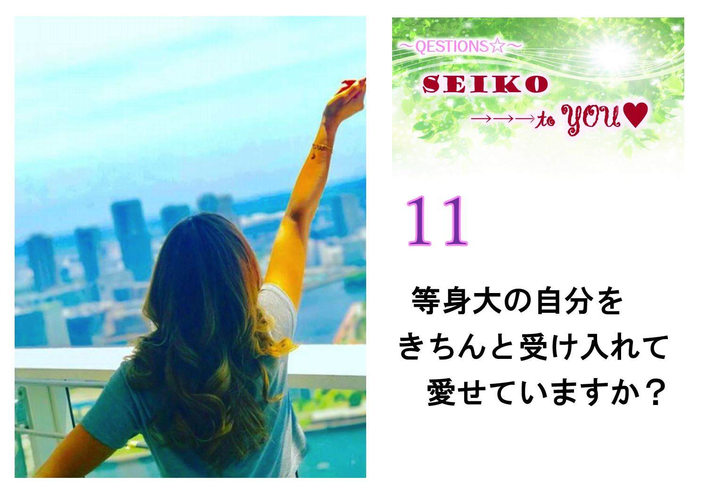
１１ 等身大の自分をきちんと受け入れて愛せていますか？
成功しようとして、自分を偽らなくていい。等身大でいいんです。
「あなたは自分でも気付いていない、こんな素晴らしいこと、こんなすごいこと、こんな驚異的な可能性がある人なんです！！」
そんなことを言ってくれるのを望んでいた人からしたら、これまで読み進めて来てガッカリしたかもしれません。
何か大それたことが書いている訳でもないし、当たり前のようなことしかこれまでお話ししてないですからね。
ちゃんと自分の好きなことに素直になろうとか、嫌なものは嫌だよね、だなんて、すごそうでもなんでもない話ばかり。
でも、たくさんの人が、どこかで大きなボタンの掛け違いをしてしまっています。
「自分が勝手に思い描いている、成功するための誰か他の人」になろうとして、そんな「誰か他の人」だなんて【虚像】に自分でしっくり来ないものだから、違和感ばかりだし、大して力も出ないし、結局ちゃんと幸せを感じられることもなければ成功もできないんですね。
あなたはもしかしたら、「等身大の自分」「ありのままの自分」じゃ、ダメなんだ！ 成功なんてできないんだ！ 世間から認められないんだ！ と思っていたかもしれません。いえいえ、そんな等身大の自分にこそ、これから成功するヒントがたくさんあるんです。
でも、「等身大の自分」をきちんと受け入れて、愛することができなければ、「等身大の自分」を真正面から見つめることができなければ、成功するヒントに気付くことすらできません。
あなた自身が幸せを感じるためにも、これはとても大切なことです。
あなたは等身大の自分を、きちんと受け入れて、愛せていますか？
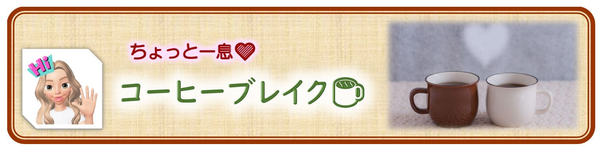
さてさて！ そろそろ自分と向き合うことにちょっと疲れちゃったよ、という人もいるかもしないので！
これまでのことを振り返りつつ、ちょっとひとやすみ。
この本、最初から内容がなかなか濃くなっています。一番最初に、等身大の自分でいいんですよ、自分の気持ちをちゃんとそのまま受け止めていいんですよ、というのを、きちんとお伝えしたかったから。
あなたにはここまで、こんなことをお聞きしてきましたね。
１ あなたの自己紹介をお願いします！
２ １、で書いた自己紹介を見てどう感じますか？
３ あなたの夢って、何ですか？
４ ３、で挙げた夢。誰の人生を歩むための夢ですか？
５ あなたにとって楽しいこと、大好きなことって何ですか？
６ あなたにとって嫌なこと、ツラいことって何ですか？
７ なんでもポジティブ病！ もしくはなんでもネガティブ病！ になっていませんか？
８ 最近大声で笑ったことは？ 泣いてしまったことは？ 怒ったことは？ 嬉しかったことは？
９ あなたがかけてもらって嬉しい言葉は？
１０ あなたが得意なこと。当たり前のように他人よりできること。どんなことがありますか？
１１ 等身大の自分をきちんと受け入れて愛せていますか？
「ふう～そうだった、そうだった！」なぁんて、ここで思い出してみてくださいね。
そしてこの「コーヒーブレイク」のコーナーでは、私が例のパソコン教室を卒業した後に、女性限定のコミュニティを立ち上げたことをお話ししたいと思います 。
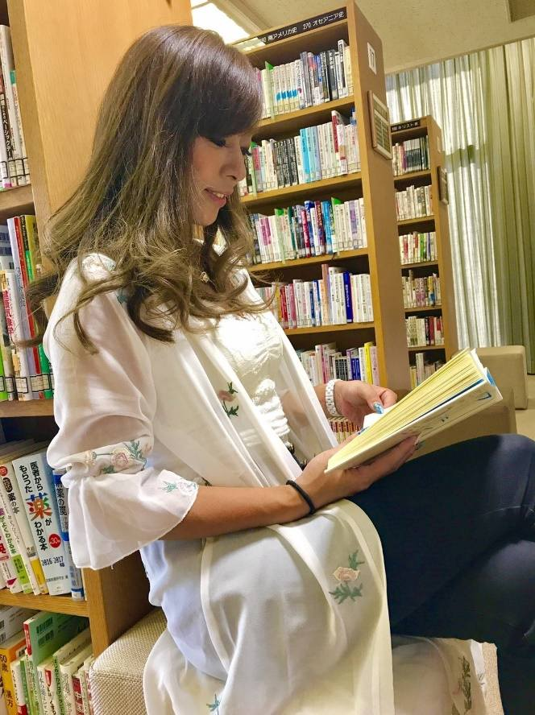
パソコン教室に通って、「とにかく、成功者になりたいっ！」と思った私。
でも、成功者って、どうすりゃなれるんだろ？
分かんなかったけど、たくさんの人が集まっていて、そのトップに自分が立っていればいいのかな？ って思いました。
そこでそのとき住んでいた京都で「ＳＨＡＷＴＹ」を立ち上げることに！
「女性限定コミュニティ」と言えば、何かそれなりに聞こえるけれども、ギャルママたちが集まっていろんなことをするところ。
お茶会とか、フリーマーケットとか、いろいろね！ みんなで集まってワイワイ、イベントをするんです。
これが、メンバーがどんどん集まって８０人くらいに！ ホームページもちゃんと立ち上げて、情報発信とか、仲間で集まって動画を撮影してＹｏｕ Ｔｕｂｅで配信するのも楽しかったですねーーー！ そして不思議と声がかかってテレビの取材も結構来たんですよ！
すごく盛り上がったサークルだったけど、でも......私は成功者になりたくてサークルを立ち上げたのに、全然稼ぐことはできていなかった。
そして参加している人たちにも、稼がせてあげたい！ って思ってたけれども、トップの私が稼げていないのだから、まあ他の人に稼がせるなんてのは難しい訳ですよね......
そのうち、腹を括って稼ごう！ と思い動き出した自分と、周りのメンバーとの価値観のズレや温度差を、どんどん感じるようになってしまいました。
「ママ」の感覚の延長線上でメンバーになった人からしたら、確かに「成功者になる！」と決意した私とは、そりゃ目指すものは変わって来ますよね......当然と言えば当然のことなのかな......
同じくらいの歳のように思えても、私はかなり若くしてママになったものだから、もう子どもはどんどん手がかからなくなって自分の時間ができるとき。
でも周りのママは、子どもがまだ小さくて、可愛い盛りで、誰か大人が絶対見てないといけないとっていう頃で。
そんなとこからも考え方の違いが出て来ちゃいますよね。
その中でお金に関する事件が起きたり、他のメンバーからは「聖子は自分だけ稼ごうとして、自分だけいい思いをしようとしてんじゃないの？」なんて余計な疑惑の目を向けられちゃって。
あ、ここまで来ちゃうと......そう。コミュニティを存続させるのも危うい。
そんな紆余曲折があって、これだけ盛り上がったサークルだったけど、他のメンバーとの心の距離を埋めることはもう難しくなっちゃったんです 。
でもね、このとき思いました。あ、人って考え方や価値観が合う人どうしが集まるものなのかなって。
考え方が変われば、周りにどんな人がいるのかも、不思議と変わって来るものなのかなって。
その人のことを知ろうと思ったら、周りにどんな人がいるのかを知るのが一番いいのかもしれない。
「その人だからこそ感じること」があります。当時のサークルメンバーは、それぞれに思うことがあって、それが私と合わなくなってしまったということ。だからメンバーたちがダメだ、だなんて一方的に決めつけることもできませんね 。
ただ、私の考え方が変わって、それに行動がついていくようになった。それまでの人生はあまりにも悲惨で前進も何もないような生活を送っていた私でしたが、この歳になってやっと成長したっていうことなんだと思いました。
今となっては私、仕事をバリバリしていたい。仕事しているときがやっぱり一番楽しい。
とは言え一生懸命にやっていたら、その分自分がまだまだだって気付いて凹むことも実は多い 。
そんなときは、こんな風にコーヒーブレイクでもしましょ。
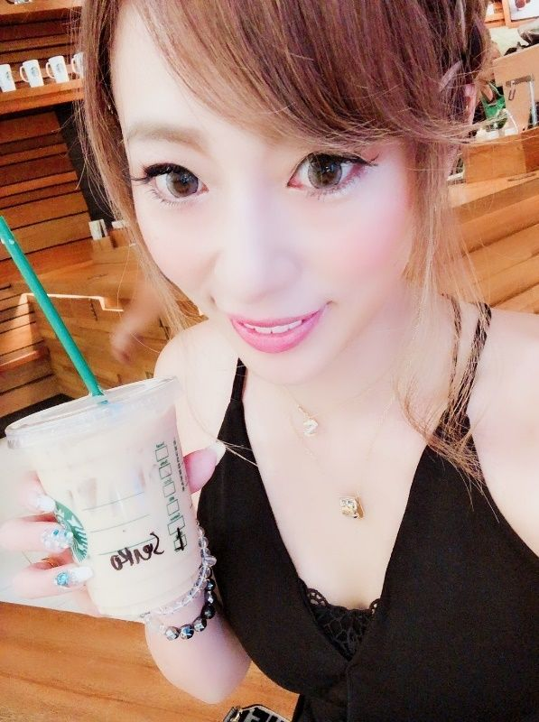
ひとやすみして、お気に入りの自己啓発の本でも読んで、エネルギーチャージ！そしてまた、パワー全開でいきますよ！
さあさあ、この本の方も、まだまだ続いていきますよーーー！！
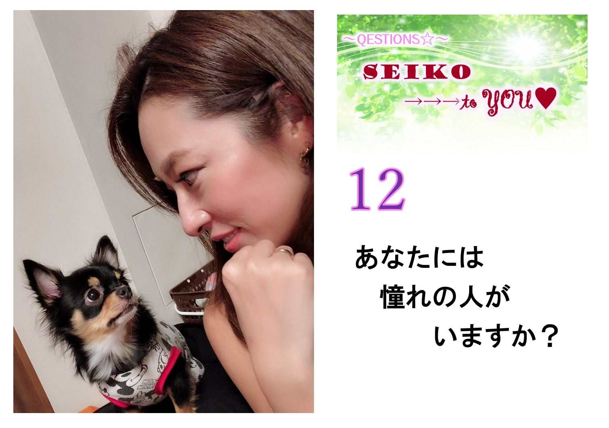
１２ あなたには憧れの人がいますか？
あなたにとっては憧れでも、他の誰もがその人に憧れるとは限りません。
あなたがその人に憧れるのには、あなただからこその理由があるのかもしれません。
そんなことから「自分が心の中で思っていること」が分かる、大きなきっかけになりますよ。
仕事と家庭をどちらも大切にしている人に憧れる人もいれば、
家庭を何よりも大切にする人に憧れる人もいると思うし、
自分が打ち込める仕事を見つけて夢中でやっている人に憧れる人もいると思います。
いつも優しい人、ずっと笑顔を絶やさないという人に憧れる人もいると思うし、
ダメなときにはもう、周りが震え上がるくらいビシッと怒る人、叱れる人に憧れる人もいると思います。
どれが正しいなんてないですね。
憧れる理由も、完全に自分にないものを持っているから、ということもあると思うし、自分も目標にしたいから、いつかは追いつきたいからということもあると思います。
そうそう。あなたが憧れる人のことを考えると、実はいろんな自分が見つかります！
「憧れの人、私にはいないなあ......」という人も！ だったら、どんな人がいたら自分にとって憧れの存在になるのか？ ちょっと考えてみましょう。
あなたには、憧れの人がいますか？
あなたが憧れるのは、どんな人ですか？
１３ 普段よく会う人や連絡をしている人を１０人挙げてください
これまで「自分の気持ちに気付く」ということをお伝えしてきましたが、でも一方で、人って周りの人の影響をすごく受けやすいもの。
先ほどの「コーヒーブレイク」でもお話ししました。その人を知ろうと思ったら、その人の周りにいる人をよく見るのがいいかもしれない。価値観や考え方、目指すものなどが似た人どうしが集まっていることがほとんどだから。
あなたが一番影響を受けやすいのはもちろん「普段よく会う人」
そして最近では「遠くの親戚よりも、ＳＮＳでよく見かける人！！」みたいな感じで、ＳＮＳでできた人脈もその人にとってかなり大切、ということも多いですよね。
ここでは、あなたが普段よく会う人や連絡をしている人を１０人、挙げてみることにしましょう。
さて、どんな人がいますか？１０人挙げてみて、何か感じることはありますか？
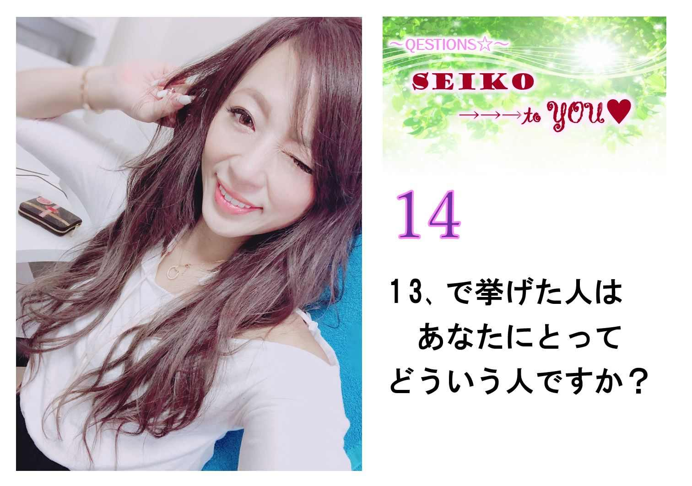
１４ １３、で挙げた人はあなたにとってどういう人ですか？
あなたの周りにいる人は、尊敬できる人ですか？ 大好きな人ですか？ これからも一緒にいたい人ですか？
それとも、仕方がないから一緒にいる人ですか？
理想を言えば、これまであなた自身が見つめてきた「自分に素直な気持ち」で、「大好き！」だと心から思える人に囲まれて生きていたいですよね。
「いや、大好きな人だけじゃなくて、自分にはライバルが身近に必要」だなんてストイックな方もいるかもしれません！
ただ、自分の周りの人のことを思い起こすと、本当はもう嫌なのに、うんざりしているのに、「仕方がないか......」と思って一緒にいるのだとしたら。
あなたの人生は、あなたの周りにいる人で大きく変わってしまいますよ！
あなたの人生が、「嫌だけれど、仕方がないか......」と思うようなものになってしまいます。さて、それでいいのでしょうか？
仕事なんか特に、人間関係で充実しているかどうか大きく決まってしまいますね。一緒に仕事をする人が大好きな人どうしだったら、大抵のことはみんなで一致団結して乗り越えられる。
一人の誰かのせいで、もうみんな嫌気がさしているような職場だったら、何をするにも楽しくないし、うまくいかない。そして、そういう人ほどずっとそこに居座っていたりもします(苦笑)
と、なると、あなたが何かアクションを起こさない限りは、「嫌だけれど、仕方ないか......」という人生をあなた自身が歩むことになってしまいますね。
あなたが普段よく会う人や、連絡をとっている人。その人たちのことを思い出しながら、「自分の人生、これでいいのかな？」と考えてみることにしましょう。
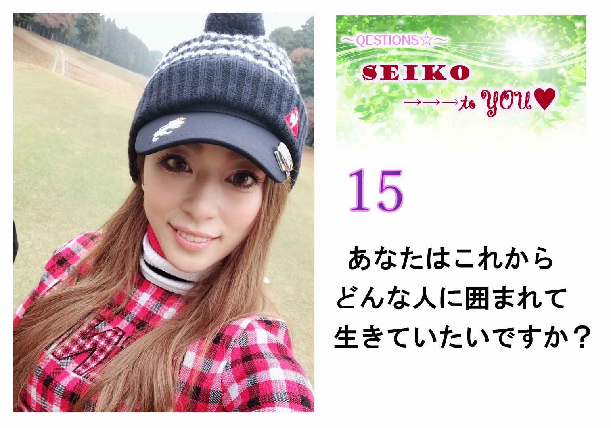
１５ あなたはこれからどんな人に囲まれて生きていたいですか？
「本当は、こんな人に囲まれていたいのだけれども......」
「本当は、心の中で憧れているような人たちに囲まれていたいのだけれども......」
「本当は、大好きな人たちに囲まれていたいのだけれども......」
「本当は、今の自分よりもいくつもレベルが上の人たちに囲まれていたいのだけれども......」
でも、そんなの、私には、ムリだよね......？
もし、そんなことを思ったのだとしたら、ちょっと、ちょっと、待ったぁーーー！
あなたが「こうしたい」と思うのなんて、自由じゃないですかっ♬
「私はこうだから、こんな人と出会うなんて、親しい間柄になるなんて、一緒に何かできるようになるなんて、絶対に無理」だなんて......またまた！ 自分の心に自分で蓋をしてしまわないようにねっ！
自分の気持ちに正直になっていいのですから。
あなたの周りにどんな人がいるかで、あなたの人生がどうなるかも大きく変わって来ることですからね。
たくさんの人と知り合いたい！ というのももちろんＯＫだし、近くにはごく限られた大切な人がいればそれで大丈夫、というのもＯＫ。「私はこうだから」「私はこれくらいしかできないから」「私はこんな立場だから」なんて言うのは、ひとまずここでは置いておきましょう。
ここではあなたの心のまま、願うままでＯＫですから。
あなたはこれからどんな人に囲まれて生きていたいですか？
■□■━━━━━━━━━━━━━━━
□■┛ 聖子のおしゃべりガチトーク☆
■┛━━━━━━━━━━━━━━━━
人脈は、今の時代、変えられる！
どんな人に囲まれていたいか？ どんな人と出会いたいか？
そんなこと、考えてみたところで、誰と出会うなんて自分では決めれないんじゃないの？
おそらくですね、そう思ってしまった人もいるでしょう。
世の中の大部分の人が、自分では誰に出会うなんて決められない、もっと言えば自分の人生なんて自分じゃ決めれない、と思ってしまっているのかもしれません。
そういう私も、「どうせ、私なんて......」って思っていたときには、自分の人生を自分で決める、というなんてところまで思考が回っていませんでした。今振り返ると、「これじゃダメだ」って自分で分かっていながら、毎日毎日のことをただこなしているだけでしたね。
ところが、パソコン教室時代に、社長から言われました。
「自分のメンターを見つけなさい。身近にいないのなら、本でもいい」
本は、本屋さんに行って、自分に読めそうなものを見つけることにしました。
ただ、メンターって、なかなかすぐには見つからないものなんですよね。
すぐには出会えなくても、「出会うための行動」だったらすぐはじめることができます。
何と言っても、私が通ったのはパソコン教室！ 私、パソコンが使えるようになったんです！
いろんなことが検索できるようになったんです！
なんて言うと、多くの人からしたらそれって当たり前のようなことですけどね。
ただ、「パソコン教室も卒業したし、これから稼げるようになりたいし、成功者になりたいし、でもどうしよう？」と思って自分にできることを探し、いろんなことに挑戦して、そのうちに出会ったのが名古屋のとある経営者でした。
今だから正直に言うと、その人がやっていることは最初はよく分かっていなかったんです。そして教わったことのひとつがトレード。
トレードって、パソコンを使ってやりますよね。私にとっては「あのパソコン教室でやったことが、こうして役に立った！」だなんてそんな気持ちでいました。
はじめてすぐに成果が出せるほど甘くはなくて、あまりに手ごたえの無さに気が遠くなりました。トレードの勉強をすると言っても、中学すらまともに行ってない、ましてや受験勉強なんて全くしたことのない私は「勉強の仕方そのもの」が分からない。チャートを見ても他の人がすぐ分かるようなことも全然分からないから、とにかく線をいっぱい引いて、自分が書き込んだ線でやたらいっぱいでぐちゃぐちゃになるくらいまで、そこまでしてなんとか自分が分かるまでやっていました。
なのに、最初はそれでも全く成果が出ないんです。
今思えばそのときは「もう私は、ここで腹を括ることにする！」だなんて決めていたとは言え、よく投げ出さなかったな......とも思います。私の人生が本格的な上昇気流に乗ってきたのは、他でもない、このときにメンターと呼べる人を探したから。そしてトレードをはじめたからでした。
だから私は、もともとトレードをものすごくやりたかった訳じゃないんです。
ただ、社長の言われた通りに、メンターと呼べる人を見つけようとしたから、いろんな出会いが繋がり、トレードにすることにし、逃げ出さずにしっかり取り組んだ結果、そこで成果を出すことができました。
さらにその成果をきっかけにして、また新たにたくさんの素敵な人に出会うことができました。この「めっちゃ元気！」というのをたくさんの人のために、最大限に活かせるようにする中で、多くの人に引き上げていただいたからこそ今に至ります。周りへの感謝の気持ちを忘れずに、一方でさらなる高みを目指しながら一日一日を大切に生きつつ、今この電子書籍を書いています。
だから、「こんな人に囲まれていたい。こんな人と出会いたい」、でも、私じゃ無理だから、なんて思ってしまっている人へ。
すぐにその人に出会うことはできなくても、「出会うための行動」だったらできますよね！
きっと皆さん、当時の私よりはパソコン使えるはずです。またｆａｃｅｂｏｏｋやＳＮＳも今ではどんどん使っていく時代になりました。ちょっと検索するだけで、ちょっとＳＮＳを工夫して使うだけで、ありとあらゆる人と出会い、繋がることができる時代ですからね。
「私には無理」だなんて最初から決めつけていては絶対にそんな行動はできません。
自分の気持ちに素直になって、そんな自分のことをちゃんと受け止めているからこそ、できる行動です。
人脈は、今の時代、ちゃんと自分の思い通りに変えられますよ。
もしかしたら、「こんな人に出会いたい！」と思い描いた人に会えるまでは、時間がかかるかもしれない。ただ、そのための行動だったらできますよね。
あなたもきっと何度も聞いたことがあると思いますが、私も今になってはっきりと言えます。
『人脈って、本当に大切です！』
周りに素敵な人で囲まれて生きること。それをどうか諦めないでくださいね！
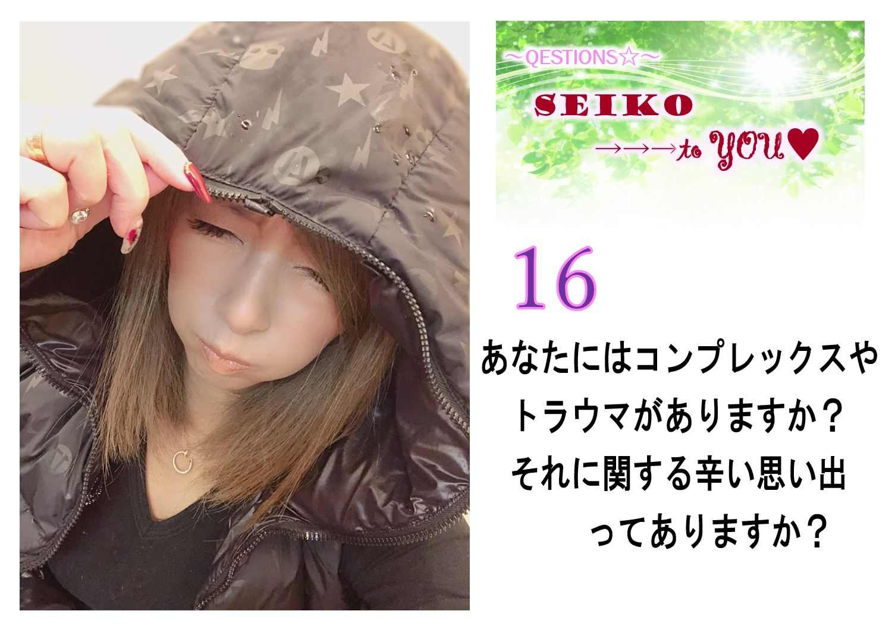
１６ あなたにはコンプレックスやトラウマがありますか？ それに関する辛い思い出ってありますか？
１５、で「本当はこんな人に囲まれていたいのだけれども、でも......」
と、思った方へ。自分の「こうしたい！」の気持ちを押し込めてしまうのは、もしかしたら「自信」がないのかもしれません。
自分が思ったことなんて、実現するのは無理だって思ってしまう。
こんな人と囲まれたい！ だなんて言ったら、そのために行動することにしたら......今いる周りの人たちは、どんなこと言うだろう？
後ろ指さされて、あいつ、身分不相応な、できもしないこと言ってる！ なんて言われてしまうんじゃないのかな......？
そんな不安がよぎった人もいるんじゃないかなと思うんです。
そこにはもしかしたら、あなた自身のコンプレックスやトラウマがあるのかもしれませんね。
私は、というと、ここまで読み進めていただいたらよく分かると思いますが、きっとこの本を読んでいる誰よりもコンプレックスがあって、トラウマばかりで......
辛い思い出は、ドロドロの昼ドラの主人公なんか比べ物にならないくらい、数知れず。
でもですね、今はちゃんと、自信を持って暮らせています。以前の私だったら考えられなかったくらい、私の周りにいるのは本当に素敵な人ばかりです。
辛い思い出があること、そのこと自体は実は悪いことじゃないですからね。
その理由は、次の１７、を読むと分かりますから。
ここではいったん、あなた自身のコンプレックスやトラウマ、それに関する辛い思い出を、人知れずこっそり思い出してみることにしましょう。
１７ ここからあなたの人生大逆転の物語がはじまります。さて、何をしますか？
「人生大逆転の物語がはじまります」はじまるってことにして、はじめちゃえばいいんです。
脚本は、あなた。
監督も、あなた。
その主人公は、もちろん、あなた。
どんな物語でもいいんです。はじまるってことにして、はじめちゃえばいいんです。
と、いうことにして、今までお聞きしたことを振り返ってみることにしましょうか。
あなたは今、どんな人に囲まれて生きていますか？
そしてこれからはどんな人に囲まれて生きていたいですか？
あれ？ そう思うと、今どんな人に囲まれているよりも、これからどんな人に囲まれていたいのかの方が、よっぽど大事なことのように思いませんか？
あなたにはもしかしたら、何かコンプレックスやトラウマがあって、自信をなくしていたのかもしれませんね。ただ、そんなあなただからこそ、これからはじまる人生の大逆転のストーリーがはるかにワクワクしたものになりますから。
主人公がいつもいつも幸せで、何をやっても、ものすごくうまくいく！ 最初から最後までが、ずっと同じようなストーリーでどうやら続いていくようだ......そんな映画があっても、途中で飽きてしまうと思いませんか？ そんな主人公の様子を見せられても、最後までみる時間の方がもったいなくて、さっさと映画館を出てしまうかもしれませんね(笑)
そんな物語、見応えもなければ実は面白くとも何ともないんです。
それよりも、あなたがこれから起こす人生大逆転のストーリーの方が、絶対に面白くなりますからね！
ただ、主人公一人だけで物語を完結させるのも、どうも難しいですね。
あなたはこれからどんな人に囲まれて生きていたいですか？
今、自分の周りにいる人があなたにとってとても大事な人で、これからもずっと一緒にいたい！ と思えるのならそれもＯＫ。
ただ、これからは全く違う人に囲まれて生きていたい、というのももちろんＯＫ！！
大事なのは、あなたがどう思うか、これからはどうしたいか、ですからね。
「今まではこうだったから......」なんて関係ないですよ。だって、今から大逆転の物語がはじまる、ということにしてしまっているのですから。
とは言っても、焦りは禁物！ 大逆転の物語を最短で終わらせようと焦ってしまうと、判断力を失って思わぬ大きなトラブルに巻き込まれることだってあるから気を付けて！
物語の途中では、思い通りにいかないこともあるかもしれない。
けれども、例え時間はかかったとしても、全てが思い通りにはいかないとしても、最後はちゃんとハッピーエンドが待っていますから。
人生大逆転の物語とは、そういうものです。その方が振り返ったときに充実感があると思いませんか？
何かうまくいかないことがあって悩むようなことがあったら、周りの人に相談したっていい。そう考えてみても、やっぱり周りの人って大切です。
ここからあなたの人生大逆転の物語がはじまります。はじまるってことにして、はじめちゃえばいいんです。
脚本は、あなた。
監督も、あなた。
その主人公は、もちろん、あなた。
どんな物語でもいいんです。
その物語の主人公は今、どんな人に囲まれていますか？
そしてこれからは、どんな人に囲まれていたらその主人公は幸せになれると思いますか？
さて、あなたは今から、何をしますか？
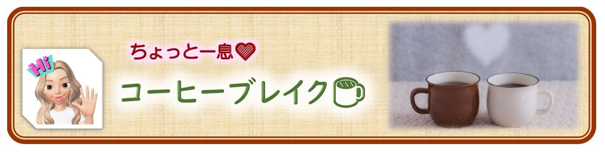
なんかね、拍子抜けしちゃって、後になったら笑えてきてしまった話をここではしたいと思います。
うちの長男が、中学を卒業！ というとき。学校で親に手紙を書く、ということをしたそうで、私もその手紙をもらいました。
やっぱりですね、中学卒業となると、親としてはいろいろと感じるものがありますね。
ここまでいろんなことがあったよなぁ、私も相当苦労したけど、長男も本当によくここまで来れたよなぁ......たくさんの思いが溢れて来ます。
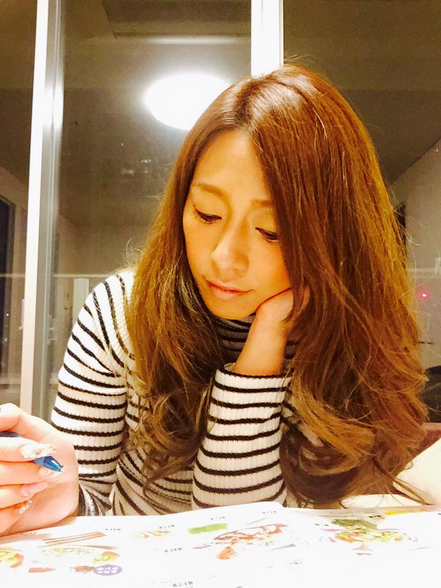
いち、母親としては、育ててくれたことへの感謝の気持ちとか、手紙に書いてあると思うじゃないですか......なんと言っても、中学卒業、というときですよ！
でも、ですね、
その手紙に書いてあったのは......
なんて言ったらいいんだろう、母である私へ人生論を説いてきたり、「お母さんはもしかしたらそう思っているかもしれないけど、僕はこう思います」ということであったり、
「なぜ、それをこの中学卒業というときの手紙で聞く！？」というような疑問を私に聞いてきたり......そんなの、家にいるときにでも聞いてくれたらいいじゃん！
と、言うことでその手紙は、私に感動の「か」の字を感じる隙すらも与えてくれはしませんでした。さすがうちの長男(笑)
ただですね、「あ、そんなこと思ってたんだ」なんて知ることもできましたね。
それにしても私は、子どもに本当にいっぱい支えてもらった。途中で、「子どもの人生を私が歩むようなことになっちゃいけない」って気付いたけど、やっぱり子どもの存在は私にとって大きい。
よくぞここまで、育ってくれたものだ......
でも社会で生きていくにはまだまだ、とも思っているぞ。子どもの意思は子どもの意思でちゃんと尊重したいとも思ってますけどね。
社会は君が思っているよりも大きなものなのだ。長男よ、もっと強く、たくましく！
......なんて言って、これ書いてて私もまだまだ、だなんて思ったわ。
私もまだやりたいことが山ほどあるのだ！ 私ももっと強く、たくましく！！
この電子書籍も、次は「手紙」に関する内容をお届けしたいと思います！
あ、そうそう、その前に！
ここでも一度、振り返っておくことにしますね。
「そうだった、そんなことちょっと考えてみたなぁ」なんて、思い出してみてくださいね
１２ あなたには憧れの人がいますか？
１３ 普段よく会う人や連絡をしている人を１０人挙げてください
１４ １３、で挙げた人はあなたにとってどういう人ですか？
１５ あなたはこれからどんな人に囲まれて生きていたいですか？
１６ あなたにはコンプレックスやトラウマがありますか？ それに関する辛い思い出ってありますか？
１７ ここからあなたの人生大逆転の物語がはじまります。さて、何をしますか？
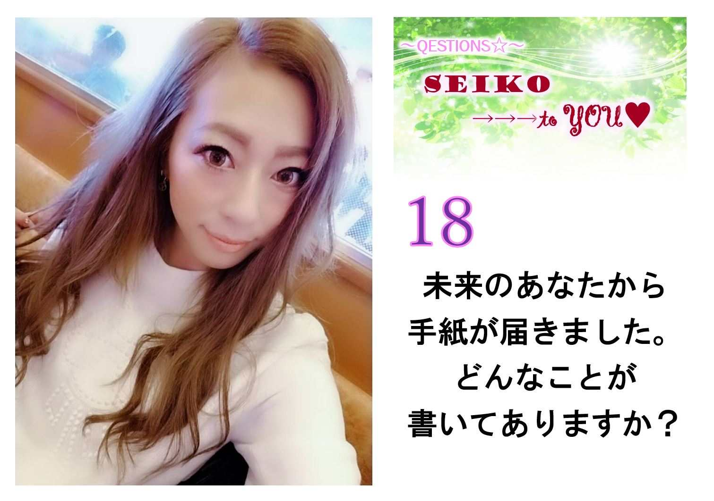
１８ 未来のあなたから手紙が届きました。どんなことが書いてありますか？
手紙は、私の長男からではないですよ(笑)
自分から、自分へ届ける手紙です。自分自身への手紙となると、自分のことを深く見つめ、考えてみるいいきっかけになりますね。
まずは、未来のあなたが、今のあなたに何か伝えたいことがあるとしたら......
未来のあなたから、今のあなたに手紙が届くとしたら？
さて、あなたの目の前に封筒があります。
「〇〇へ」と宛名にあります。〇〇、に入るのはあなたの名前です。
「◆歳の〇〇より」だなんて書いてあります。
「中には、どんなことが書いてあるんだろう？」ちょっとドキドキしますね。その手紙を開封して、便箋を取り出してみることにしましょう。
さて、そこにはどんなことが書いてありますか？
１９ 未来のあなたが、過去のあなたに手紙を書くことにしました。どんなことを書きますか？
今度は、主語が「未来のあなた」です。と言うことは、未来のあなたになりきって考えてみてください！
なりきる自分、というのは、コーヒーブレイクの前に考えてもらったような「人生の大逆転を成し遂げた自分」や、「ちゃんと幸せを感じて生きれている自分」です。
ここでは間違っても、何をやってもうまくいかない自分や辛い未来を想定して、そんな自分になりきって書いたりはしないようにしてくださいね。
ちょっと、その前に、そう言えば！！
１８、のところで届いた未来の自分からの手紙。そこでも、ものすごく苦しい思いをしていて、そこから抜け出せないでいる未来の自分から届いたとしたら......
いえいえ！ その手紙はですね、何かの大きな手違いであなたのもとに届いてしまったのですっ！(笑)
手紙の差出人は、「ものすごく苦しい思いをしているあなた」じゃなくて、「それを乗り越えて幸せを手にしたあなた」ということにしましょうよ。
だから、手違いで届いたその手紙は、今すぐ心の中で破ってしまってください。
そして、あなたの心の中でいちいち今のあなたに何かストップをかけてくるような、過去の煩わしい思い出なんかと一緒に、その手紙、燃やしてしまうことにしましょう！ファイヤーーー！
（注意 あくまでも、あなたの心の中で行ってください）
そして、今度はもう一度、幸せを感じられている未来のあなたになりきって、手紙を書くことにしましょう。
あなたは椅子に座っていて、目の前のテーブルの上に便箋があります。
そしてあなたはペンを手に取りました。
過去のあなたへ。
あなたは過去のあなたに、どんなことを伝えたいですか？
あなたはどんなことを、その手紙を書きますか？
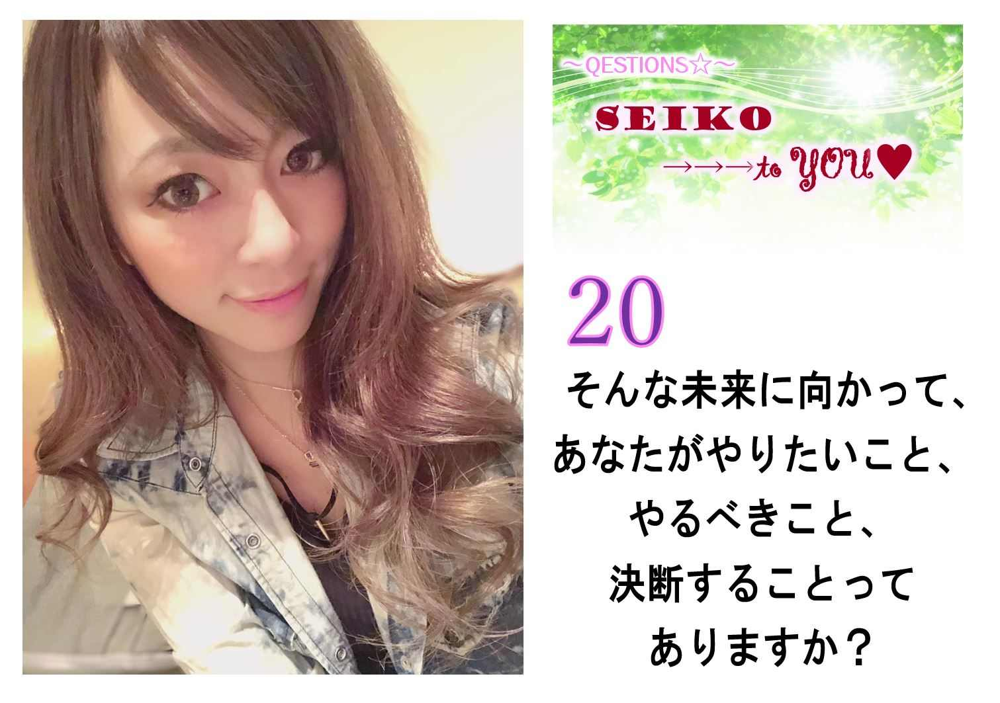
２０ そんな未来に向かって、あなたがやりたいこと、やるべきこと、決断することってありますか？
１９、でなりきった「未来のあなた自身」。
今の生活を同じように繰り返して、延長線上にその「未来のあなた自身」はいてくれそうですか？
「それは違う」と思う人がほとんどだと思うんですよね。
うっかりしていると、今の生活に満足はしていないけれども、今の生活をただなんとなく繰り返していれば、なんとなく、未来はもっとちゃんとしているような気がする......
そんな「なんとなく」の気持ちで毎日を過ごしてしまいます。
そして今日も明日も、５年先も１０年先も同じような毎日を送ることになってしまいます。
いえ、今の生活をなんとなくしていて、誰かがあなたをある日突然別のところに連れて行ってくれる訳じゃないですからね。
未来に向かって歩き出せるのは、「今の私」しかいませんから。
「今の私」が、「思い描いた未来の私」になれるために、今やれること！
どんなことがありそうですか？
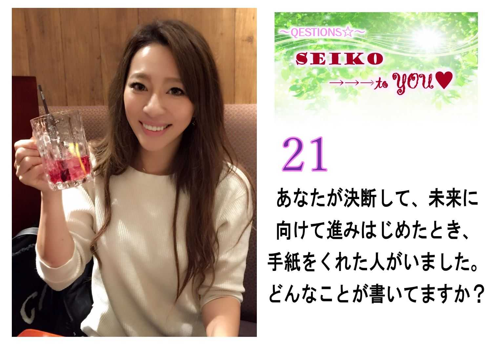
２１ あなたが決断して、未来に向けて進みはじめたとき、手紙をくれた人がいました。どんなことが書いてありますか？
もしかしたら、何かを決断したときには、今いる場所に居続けてはダメだと気付いて、誰かと別れないといけないかもしれませんね。
すぐに別れる必要はないとしても、近くにいる人に「私は将来、××××がしたいと思って、そのためにこれから△△をすることにしたんだ」なんて話をしたとしましょう。
不思議なもので、何か新しいことをするときに、変な罪悪感を感じてしまう人もいます。
自分だけ、こんなことしていいのかな？ ここにいる人を置いて、自分は前に進むためにこんなことしていいんだろうか？
ですが、もしそんなあなたに、近くにいる人が手紙をくれたとしたら？
どんなことが書いてあるでしょうか？
「たぶん、こんな私に、応援のメッセージをくれるんじゃないのかな？」
そう思えてきませんか？
そう。あなたは応援されているんですよ！ それは、「こんな自分なんて......」なんて思い、明るい未来も描けずに、自信を見失って生きていたらなかなか気付けないもの。
そして、そんな人を、人はあまり応援したいとは思えませんね。
あなたが思い描く未来に向けて歩みはじめるからこそ、応援してくれる人がたくさん現れるんです。
ただ、どう考えてみても、自分の周りの人が手紙をくれたとしても、恨みや文句、嫉妬の言葉くらいしか書いてなさそうだ、そう思ったとしましょう。
だったら逆に、そんな人ばかりのそんな場所に、ずっと自分は居続ける必要はないと思えませんか？
あとはそうですね、うちの長男みたいに、「なぜ、このタイミングで、この手紙？」みたいなことも起きるかもしれません。一瞬唖然とするかもしれないけど、それは後で笑い話にしてしまいましょう(笑)
気付いて欲しいのは、未来に向けて進みはじめることに、変な引け目を感じなくてもいいということ！
そして、そんなあなたを応援してくれる人は、きっと多いのだということ。普段は素っ気ないとしても、未来に向けて歩みはじめた瞬間に、あなたを応援しはじめる人もたくさんいるのかもしれませんよ！
何かを決断したときに、あなたが受け取った手紙には、どんなことが書いてありますか？
今の時点では「想定してみること」しかできないかもしれませんが、その言葉を自分に言い聞かせてみると、なんだか心の底から勇気が湧いてきそうな気がしませんか？
２２ 普段、本当は伝えたいと思っているけれどもなかなか伝えられていないことってありますか？
手紙、のお話なのでこんなこともちょっと考えてみることにしましょう。あなたには、普段本当は伝えたいのに伝えられていない思いってありますか？
特に、あなたの身近にいる、大切な人に対して......大切な人こそ、そばにいるのが当たり前になり過ぎていて、なんだか照れくさくって、伝えたいことが伝えられなくなってしまっているかもしれませんね。
そんな誰かに、手紙を書くとしたら、どんなことを書きますか？
本当は伝えたいのに伝えていないことで、思わぬ誤解が生まれてしまい、後で埋め合わせようもないくらいに深い溝になってしまうことだってあります。
大切な人に突然何かが起きて、本当は伝えたかったのに伝えられなかったことを、それこそ死ぬほどの後悔の気持ちを抱えながら生きて行っている人もいます。
今日の当たり前が、明日の当たり前だとは限らないから。
そうなってしまう前に！
本当は伝えたいのに、伝えられていないこと。
そんな気持ちを手紙にするとしたら、あなたはどんな気持ちを綴りますか？
■□■━━━━━━━━━━━━━━━
□■┛ 聖子のおしゃべりガチトーク☆
■┛━━━━━━━━━━━━━━━━
伝えたくても、もう伝えられないこと
～父へ～
私にも、今となってはどれだけ何かを伝えたくても、もう伝えられなくなってしまった人がいます。
その一人が、私の実の父です。
もう覚えてすらいないのですが、私が２歳のとき。両親が離婚をすることになり、「お父さんとお母さん、どっちがいい？」というようなことを私は聞かれたそうなんです。
そこでなぜか、私は父を選んだそうなんです。
こういうケースは、お母さんを選ぶ子の方が多いようなんですけどね。私が父を選んだ、ということで私は父と暮らすことに。
父と一緒に暮らしていたのは、北海道の函館。
その生活は、あまりに貧しいものでした。
が、「あのときは貧しかった」だなんて、小さな私には分かりません。
ただ、幼心ながらに分かっていたのは、私は幸せだったということ。
そして私は、本当に愛されていたこと。
父は働かないし、お酒ばかり飲むし、そんな状態だからますます働けなくなるし、挙句の果てにはそんな生活の先に約束されたように病気になってしまうし......
家はかなり不衛生だった。そして私も不衛生なこと極まりなかった。
大人はそんな状態だと、やっぱり心配しますよね。でも、小さな私には、そんなこと全く分からないし、気にしてもいなかった。
ただ、幼心ながらに分かっていたのは、私は幸せだったということ。
そして私は、本当に愛されていたこと。
ちゃんとした栄養をとれるのなんて、学校の給食のときくらい。
家ではきちんとしたご飯を食べることなんてできない。それはお金がなかったから。
父が病気だったから。
まさに、底辺の、底辺の、底辺の生活です。
それでもですね、私、
愛されていたんですよね......
たぶん、
『無償の愛』って、
そういうことなんですよね......
父は世間から言えば全くダメな人間でしょう。
娘がいるのに、アルコール依存症になって、病気にまでなって。
ただ、小さな私はそんなこと分かるはずがありません。
私にとっては、父は私を本当に愛してくれた人でした。
そして私にとっては、本当に素敵な人でした。
何も分かっちゃいない、何を話しているかもまだよく分からない２歳の娘を、突然母と別れて引き取り、育てることになるなんて......
分からないこと、戸惑うことだってきっとたくさんあったと思います。
それでも、分からないなりに、
不器用ななりに、
私を大事に大事に育ててくれました。
世間の言う「大事」とは、ちょっと違ったのかもしれないけれども......
私の人生を振り返ると、やっと今でこそ幸せを感じることができているけれども、それより前は人並みの幸せを感じたことができた期間というのは驚くほど短い。
その貴重な短い期間のうちのひとつが、小学校２年生まで、実の父と一緒に暮らしていたとき。
今は「成功したい！ もっともっと上を目指して行きたい！」だなんて言ってる私ですが、でも成功するだけが全てではないとも思っています。
父はこんなどん底の状態でも私のことを心から愛してくれて、
そして私は幸せだったから。
もしかしたら子どもの前では辛い顔をしたり、弱気な言葉を漏らさないようにしていただけだったかもしれません。
それでも父は、私と一緒にいることができて本当に幸せだったんじゃないかと思います。
ただ......
あれほど貧しくなければ、もしかしたら、父を病気から救うことができたのかな......
娘の私には決して分からないようにしていた、父が抱えていたいろんな重荷。もう少しでも豊かでさえあれば、父の肩からちょっとずつでもおろすことができたのかな......
そして、
「幸せでした」
「愛されていました」
と、過去形で書いているのを読んで薄々分かるとは思いますが、実の父はもう、この世にはいない人です。
......
......
......
父は、私の知らないところで亡くなっていました。
そのときは私にとっては見ず知らずの母。
その母がたまたま、北海道に旅行に来ていて、「聖子はどうしているだろう？」と学校に連絡をしてみたんだそうです。
ちょうどそれが、学校側が、これはもう私の家庭があまりに貧しすぎて、酷すぎて、このままでは私はちゃんと生きていけない......児童養護施設に入れねば、と決めていたときでした。
今でもはっきりと覚えています。それは給食の準備をしていたときでした。
事情を聞いた母が学校に来て、私はそのときは何者か分からない女の人に、突然京都に連れて行かれることになったのです。
「あなたにはお姉ちゃんと弟がいるの」
だなんて、全く身の覚えのない話なんてされて。
それから、
あれだけ私を愛してくれた父と会うことは、
もう二度と、
ありませんでした......
そして後で知らされることになるんです。
電話で、「あなたのお父さんは死んだよ」って。
それは、亡くなってもうかなりの月日が経ったときのことでした。
今となっては何も伝えられないけれども、でも私が今こんなに元気いっぱいでいられるのは、父の無償の愛があったからかな、とも思うんです。
今の私には、まだまだやりたいことはいっぱいあるし、まだまだ高みを目指していきたい。
でも、ただ成功して、人の上に立つことだけが本当の幸せだとは思っていないから。
他でもない自分自身が幸せを感じることができてこそ、本当の幸せなんじゃないのかな。
あのときは幼すぎて何もできなかったけれども、今こうして私が生きていられるのは、あのとき父が私を、心から愛してくれたおかげです。
父がいなければ、私はこんな風に生きていられることはなかったでしょう。
もう、何もできないけれども......
今できることと言えば、ここでこうして、感謝の気持ちを伝えることくらいだけれども......
ありがとう。
ただただ、
ありがとう。
本当に、ありがとう。
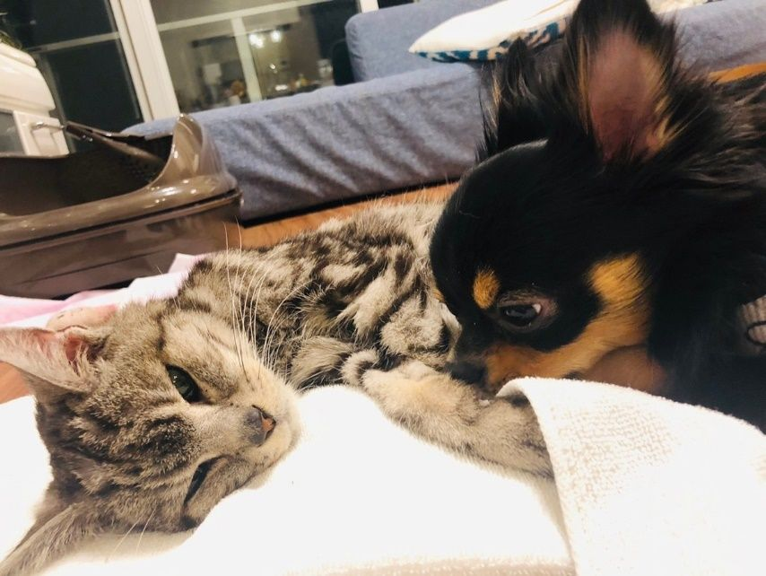
猫のトッティと、犬のヴィトン。
１７年間、私の人生の半分という長い間、ずっと側にいて私を癒やしてくれたトッティも、２０１８年１２月１７日にお空に旅立ちました。
１７年間......本当に長生きしてくれたトッティ。
きっと、私たち家族のことをお空から見守ってくれているはず！
そしてたぶん今でも、変わらず私が元気に仕事してる方が、トッティも安心するでしょう。
まだまだ家に帰ると、トッティが家にいるような気がしてしまいます。そうですよね、家族だから心はいつも一緒！！
そうやって見守ってくれるたくさんの人や家族がいるからこそ、私は今日も元気に、どんどん前に進んでいきます！！
２３ ある日届いた手紙を開封すると、そこには１０年前に戻れるチケットが入ってました。さて、何をしますか？
またまた不思議な手紙のお話。１０年前に戻れるチケットが入っていたら、何をしますか？
これは、ぜひ書き出してみて欲しいです！ これまでの内容も、まとめながら読み進めてます、という方もいらっしゃるかもしれません。もちろんそういう方、素晴らしいです！
そして特にこの質問には、大事なことに気付いて欲しいので書き出してみて欲しいのです。
あなたは、そんな不思議なチケットが手に入ったら、何をしたいですか？
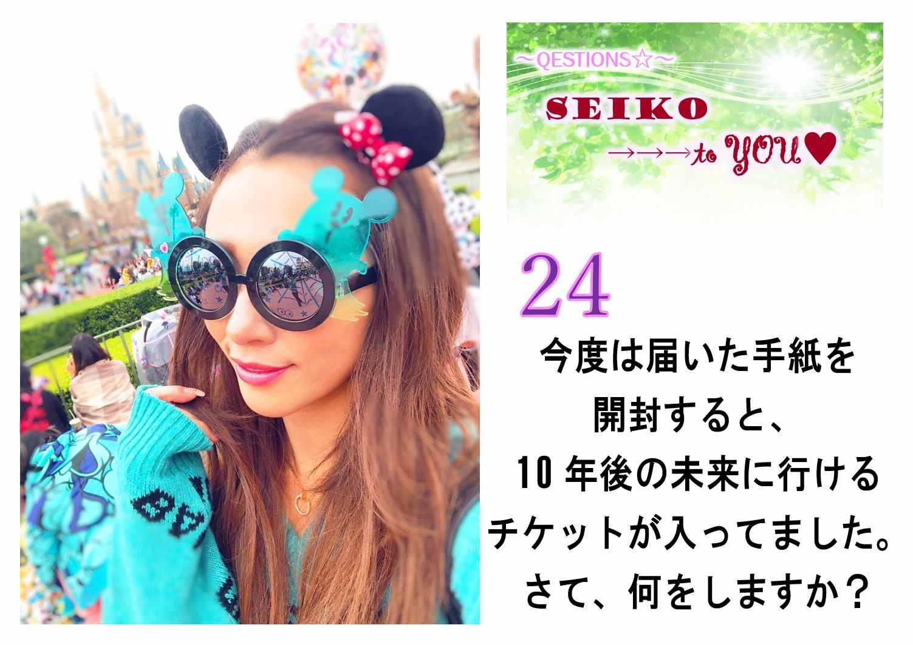
２４ 今度は届いた手紙を開封すると、１０年後の未来に行けるチケットが入ってました。さて、何をしますか？
お次は「未来」です！
こちらに関しても、ぜひ書き出してみてくださいね。
未来に行ける、不思議なチケット。あなたは１０年後に行くことができました。
さて、あなたは何がしたいですか？
２５ 手紙を開封すると、謎の脅迫状が入っていました。
「あなたはあと３日後に死にます。覚悟しておけ」あと３日の命だとしたら、あなたは何をしますか？
あと、３日です。３日もあれば、いろんなことができる！と思いますか？
それとも、たった３日しかない、できることは限られている、と思いますか？
残された時間はあと３日。未練のないようにしておきたいものですね......
これも、そうですね！ 先ほどと同じように、書き出してみてください。
死んでから後悔しても、もう何もできません。あなたは何がしたいですか？
２６ 今、目の前で書き出したこと。今からでもやりませんか？
あなたの目の前には、１０年前に戻れたらやりたいことと、１０年後に行けたらやりたいこと、そしてあと３日後に死ぬとしたら後悔しないようにやっておきたいことが書いてあると思います。
それ、本当に、１０年前じゃないとできなかったことですか？
それ、本当に、あと１０年経たないとできないことですか？
それ、本当に、３日後に死ぬというときにしかできないことですか？
自己啓発とか、将来設計とか、そういうときに「これから何をしたいですか？」と聞くと、何だか素晴らしいことをちゃんと考えてなきゃいけない、だなんて思えて、妙に肩ひじを張った答えになってしまいがち。
ですが、今、あなたが２３、２４、２５と書き出してみたもの。
案外、そちらに書いてあることの方が、あなたが心の底で本当にやりたいことなのかもしれませんね。
人と比べることなく、誰かに対して変な見栄をはることもなく、体裁を保とうとすることもなく、あなた自身が心の底で本当にやりたいこと。
もしかしたら、書き出した中には、今すぐには難しいこともあるかもしれません。
ですが、今からでもやれることって、意外とたくさんあるかもしれませんね。
「本当はやろうと思えばできるけど、でも、これはもう少しして、子育ても落ち着いてから......」なんて思った人！
それって、もし子育てが落ち着いたとしても、今度は「もう少しで仕事が落ち着きそうだから、それから......」だなんて言って、結局先延ばし、先延ばしにしてしまうことがほとんどです！
そうしているうちに、ずっとできないままになってしまいますから。
さて、どうでしょうか？
あなたが本当は、心の底でやりたいと思ってること。
それをやらないまま、ずっと先延ばしにして、「なんだか今の自分は、本当の自分じゃない気がする、もっと何かができそうな気がする！ なのにそれが何か自分でもよく分からない......」と虚しさを感じながら生きていくことにしますか？
それとも、例え小さなことだとしても、「自分自身が本当はやりたいことは、これなんだ！」と気付いたことをちゃんとひとつずつやっていって、自分だからこその幸せを感じながら生きていくことにしますか？
私だったら、そうですね、やっぱり後者を選びますね！
１０年後にできること、でも、今でもできることを、先に今やってしまってもいいじゃないですか(笑)
１０年後に回さないといけない絶対の理由って、きっとないし。
そうやって、自分の気持ちに嘘つかないで、ひとつずつ、自分が幸せを感じるためにできることはどんどんやっていきましょう！
目の前の紙に書き出してみたこと。そこにはどんなことがありますか？
別に３日後に命を狙われる、私は死ぬ、だなんて条件がなくったっていい。今からできることってありますか？
あるのなら、あなた自身のためにどんどんやっていきましょう！
「聖子さーん！ そんな、自分のやりたいことを、後悔のないようにやる！ だなんて言われても......
僕が知りたいのは、やっぱり、成功する方法なんです！ 成功して、お金をいっぱい稼ぎたいんです。
これまでの内容で、僕自身の楽しいことを思い出してみたり、嫌なことを挙げてみたり、誰かに伝えたいことをちゃんと伝えましょう、だなんて言われても......
そんな人間らしい、けれども全く生産性のないことよりも、もっと、こう、合理的にうまくいく方法や、マニュアルとかテンプレートがあると嬉しいんですが。
聖子さん、そういうのってないんですか？」
ここらあたりでそんな声も聞こえそうな気がしたので。
いえ、これからの時代、成功しようと思ったら、「人間らしさを、ちゃんと知っている」というのが、絶対に欠かせなくなってきますからねっ！！
「ＡＩが、これから人間の仕事を奪っていく！！」だなんて、よく聞くじゃないですか。
なんか、大袈裟な話のように思えていたけれども......
それよりもさらに進化して、
「人間らしさをちゃんと知っているＡＩが、人間らしさを忘れてロボットのようになってしまった人間の仕事を奪っていく」
そんな時代になっていきそうなんですよ 。
いやいや、なんのこっちゃ？？？
そう思った人もいるでしょう。
例えば「変なホテル」なるものが、もう既に現れています。
運営するのは、旅行でも有名なＨ．Ｉ．Ｓ。
長崎のハウステンボスで１号店がオープンした後も、着実に全国に展開して行っています。
ご存知の方も多いと思いますが、この「変なホテル」、何が「変」なのかというと、人間の代わりにロボットが出迎えてくれるホテルなんです。
フロントに行ったら、人間じゃなくて恐竜（のロボット）がいた！！！
なんて、ね。
そんな冗談みたいなことが本当に起きていますからね！！
利用者の立場になって考えてみてください。
ふたつのホテルがあるとします。
ひとつめは、フロントにいるのが、いかにも仕事が面倒そうで、ホスピタリティも何もあったものじゃない人間、というホテル。
ふたつめは、フロントには、なんだか人間臭くて、ときにビックリさせられて、「仕事が面倒」だなんて表情はせずにちゃんと仕事をしてくれるロボットがいる、というホテル。
うーん、ちょっと好奇心もあって、ロボットのホテルを選ぶかなぁ......
でも、なんかロボットって、違和感あるなぁ......
そう思うかもしれませんね。
じゃあ今度は、経営者の立場になって考えてみましょうか。
人件費も高くて、いかにも仕事が面倒そうで、ホスピタリティも何もあったもんじゃない、仕事の文句も言うし、経営者の自分にも不満がありそうだし、何かトラブルでも起こしそう、そんな人間を雇うのと、
維持費は人間の人件費ほどは全然かからなくて、それだけじゃなく宿泊された方を最大限におもてなしできて、滞在されている間、宿泊されたお客さまに、未だまだ見ぬ驚きと感動の体験をしてもらおう！ とあらかじめプログラミングされたロボットと......
この二択だとしたら、そしてあなたが経営者だとしたら、どちらを選びますか？
そうなれば......わざわざ人件費の高い人間を雇いたい、と思う理由が、なくなってきちゃいますよね。
「人間らしさをちゃんと知っているＡＩが、人間らしさを忘れてロボットのようになってしまった人間の仕事を奪っていく」
人件費のかかる人間を雇おうと思ったら、それに見合うだけの仕事をしてくれる人でないと！ってなります。
「目の前のお客さまが、どんなことをしたら喜んでくださるのか？」と考え、自分からどんどん動いて、ロボット以上に、プログラミングされたロボットでは到底できないレベルで、目の前の人に満足していただくためのサービスができる人間だったら......
そんな人だったら、ロボットに取って代わられることはないでしょうね！
ただ、ロボットみたいな仕事しかできない人間は、人間らしさをプログラミングされたロボットにどんどん取って代えられてしまいます......
そして考え方として間違って欲しくないのが、直接的に、ロボットたちが人々の仕事を奪っているのではないでんですよ！
「人間らしさや、人がどういうことをしたら喜ぶのかをよく分かっている人」が、ロボットに命を吹き込むからこそ、そのロボットとの体験で喜ぶ人がいる、ということです。
分かりますか？
ちゃんと表現するのであれば......この一文、ちょっと長くなりますが、理解しながら読み進めてくださいね。
「人間らしさがどういうことかよく分かっている人が、多くの人に喜んでもらえるようなロボットを開発して、そのロボットたちに、ロボットのようになってしまった人間たちの仕事の代わりをさせて、その向こう側にいるたくさんの人に感動や喜びを届けている」
のです。
この、心の叫びでいっぱいいっぱいで、誰かを思う余裕なんてなくて、何が自分にとって大好きなことのか、何が大切なことなのかを見失ってしまっている人ばかりになってしまった時代に、
「誰かを愛すること」
「愛で溢れた世の中にすること」
そんなことをとても大切にしている人たちが、ＡＩビジネスやさまざまな事業を通してそれを実現しようとしているのです。
もし、あなたが、
「お金が欲しい。お金が欲しい！」
「人間らしさなんてあまり考えたくない。ムダに疲れることはしたくない。合理的に、言われた通りにするだけで、希望の金額をきっちり受け取れるようなマニュアルが欲しい」
だなんて、そんなロボットのようなこと繰り返してるだけだったら、あなたは人間らしさをプログラミングされたロボットに取って代わられてしまう可能性はかなり高いですね。
「変なホテル」はホテル数を増やしています。それだけ需要があるし、経営としてもうまくいっている、ということでしょう。
ロボットが接客をするのは、何もこの「変なホテル」だけではありません。
ロボットが接客をするカフェも現れました！
今はまだ、合計１０日間の実験が行われた、という段階で正式オープンはしていないんですけどね。こちらもニュースになったのでご存知の方もきっといると思います。
そこで接客をするのは「オリヒメ」という分身ロボット。そのロボットを操作するのは、重度の障害を持っているなどの理由で、社会に出るのが困難になってしまった人たちです。
「あらゆる人たちに、社会参加、仲間たちと働く自由を」
そんな、人間らしさをとても大切にした人たちが、コンセプトをつくり、ロボットを開発し、実験とはいえカフェが１０日間オープン。その活動は多くの人々からの注目を集めています。
実際にロボットを遠隔操作することで接客をした人の中には、それまでは仕事なんてしたことがなかった、社会に参加することをあきらめてしまっていたような人ばかり。
そんな人から、「まさか自分に、接客ができるなんて......本当に嬉しい！」「もっと、もっと、働きたい！」という声も挙がったそうですよ。
だから、これからは楽して稼ぎたいとか、そんなロボットみたいなこと人間が言ってられる時代じゃなくなっていくってこと。
かと言って、今以上に働け！！ とか、心と体を擦り減らしながらでも働くべきだ！！ とか、そういうことを言いたい訳じゃないですからね。
楽して稼げる方法をロボットみたいに求める前に、あなたが本当に楽しめる、打ち込めるようなことを見つける方がいいですから！
さらにはこんな話もしましょうか。
もしあなたが「心ある人間のあたたかさ」に触れ、「真の意味での人間らしさ」をあなたなりに理解し、さらにはあなたが培ってきたものを、ロボットへの命として吹き込むことができたとしたら......
あなたは「これからの時代の人々が求めている、人間らしいビジネス」を【仕掛ける側】になれるということです。
あなたの知らないところで、そんなビジネスはどんどん立ち上がって来ていますよ！
今はまだ、表には出ていないものがほとんどですけどね。でも、これから形になったものがひとつ、またひとつ、そしてまたひとつ！と世に出て行くでしょうね。
ただ、こんな話、今いきなりされても、ピンと来ないかもしれません。
【人間らしいビジネスを、仕掛ける側に回る！】
だなんて、そんな発想すらなかった人がほとんどでしょう。
ここでは、これからの時代、『人間らしさ』、というものがこれまで以上に求められていくんだということを覚えておいてください。
お金を稼ぐためのテクニックは、後からでも身につきます。
でも、あなたにとっての幸せは何か？ とか、人はどんなことで喜び、どんなことで悲しむのか？ などということが全く分からず、稼ぎ方だけ身につけようとしても、もうそれでうまくいくような時代ではありません。
逆にテクニックを先に身につけてしまうと、それで自分がちゃんとできるようになったかのように勘違いしてしまうので、後から修正するのが非常に難しくなってしまいます。
幸せに成功したい、と願うのであれば、まずはちゃんとした成功哲学や人の感情について理解をしましょうね 。
成功哲学も、上辺だけの知識で全て分かったような気になっている人も山ほどいます。そんな習得の仕方では、残念ながら絶対にこれからの時代は通用しなくなります 。
ちゃんと、あなたという人をあなた自身が理解するからこそ、あなた自身が感じていることが分かり、自分以外の人間のことや、人間ってどんなことで喜び、どんなことで悲しむんだろう？ ということも手に取るように分かってきて、
そこではじめて、成功哲学が本当の意味で役に立つのですからね！
そんなことを頭に入れて・・・ここでまた、振り返りをしてみることにしましょう！
１８ 未来のあなたから手紙が届きました。どんなことが書いてありますか？
１９ 未来のあなたが、過去のあなたに手紙を書くことにしました。どんなことを書きますか？
２０ そんな未来に向かって、あなたがやりたいこと、やるべきこと、決断することってありますか？
２１ あなたが決断して、未来に向けて進みはじめたとき、手紙をくれた人がいました。どんなことが書いてありますか？
２２ 普段、本当は伝えたいと思っているけれどもなかなか伝えられていないことってありますか？
２３ ある日届いた手紙を開封すると、そこには１０年前に戻れるチケットが入ってました。さて、何をしますか？
２４ 今度は届いた手紙を開封すると、１０年後の未来に行けるチケットが入ってました。さて、何をしますか？
２５ 手紙を開封すると、謎の脅迫状が入っていました。
「あなたはあと３日後に死にます。覚悟しておけ」あと３日の命だとしたら、あなたは何をしますか？
２６ 今、目の前で書き出したこと。今からでもやりませんか？
■□■━━━━━━━━━━━━━━━
□■┛ 聖子のおしゃべりガチトーク☆
■┛━━━━━━━━━━━━━━━━
手紙
弟へ。
「もしかしたら、何かあったのかもしれません」
あまりに突然に、その連絡が来た、あのとき。
まったく、何やってんのさ......
せっかく私、パソコン教室にも通って、そこでの社長の出会いもあっていろんなこと勉強して、人生が上向いて来たときだったのにさ......
でも、責める訳にもいかないよね。
私もめちゃくちゃ、もうどうしようもないってくらい、後悔したから。
一度、会えないかなって連絡あったよね。
そのときは、確かちょっと忙しかったか何かで、会いに行けなかったよね。
もしあのとき会えてたら、救えていたのかもしれないけど......
今思えば、それが声を聞いた、一番最後のときになっちゃった。
本当にごめん。
息子二人にとっては父親代わりのような存在だったよね。
その息子たちも本当に大きくなったよ。
家にもよく来てくれたし、入学式や学校行事にも顔出してくれたよね。
そうそう。
息子たち、中学にもなればさ、私、中学ほとんど行ってないから
「へー文化祭ってこんなことするんだ！」とか、
「中学校の運動会って、こんなことするんだ！」とか、
「受験勉強って、こんなんだったの？」なんて、
なんだか私も息子たちと一緒に育って行ってるみたいな気がしたよ。
私ら家族は元気にしているよ。
寂しくないなんて言ったら嘘。
小学校２年のときにはじめて弟がいることを知って、
もう、どうなることかと思ったけど、
でも、お姉ちゃんと、弟と、３人で仲良しになって
うちらはみんな年子でみんな５月生まれ、だなんてことが
昔からのうちらの自慢だったよね。
ただ、さ......
中学のとき、私もお姉ちゃんも、
ほとんど家にも帰らなくなちゃったよね。
お母さんは働き詰めで
私にとっての新しいお父さんはずっと家にいて
そのお父さんが、うちらに暴力を振るってたこと
お母さん、全く知らなかったんだ。
子どもにエアガンで撃って来るなんて......
ありえないよ、ああいうの。
後になっても、そういうのって、自分の中に残っちゃうからね。
私は家から逃げることにしたけど......
相当ツラい思いしたと思う。
その後もお金のこととかいろいろあったみたいだね。
生き辛さを抱えて、どうしようもなくなってたみたいだよね。
もう、
後になってから分かったことで、今となっては何もできないのだけれども。
ただ、
......生きていて欲しかった。
気付かないうちに北海道に移り住むことになってて、
そして、あの連絡が来て、
「覚悟はしておいてください」
って言われて、家族で北海道に向かって......
調べてみると、部屋のドアが、内側から鍵をかけたのが最後で、
もうしばらく開けられていないようですからって。
もう、変わり果ててはいたけれども、一目で分かったよ。
ああ、
これは、
......うちの弟だって。
そして、散らかった部屋を見ると分かるんだよね。
あ、間違いなく、うつ病だったんだろうなって......
自分を大切にできていなかったのが、部屋にあらわれて分かる。
これって、私もうつ病だったから分かることなのかもしれないけれども......
きっと、一人で抱えて悩んで、
もう、どうすることもできなかったんだろうね。
家族みんなが真っ青になったし、立ち直るまでは時間がかかったけど......
今でも完全に忘れた訳じゃないから。
そのときどう思っていたかなんて、本当はよく分からないけれども、
自分で選んで楽になれるところに行ったのだとしたら、
それで、良かったんじゃないのかな
それで、幸せだったんじゃないのかな......
そう思うようにしたんだよね。
ただ、私はしばらくは......そっちには行かない。
私には、やりたいことがまだ、山ほどあるから。
後悔だって腐るほどしたけど、でも、
私がやりたいことも、それ以上に、もう腐るほどあるから。
そして、本当は生きられていたはずの
今日という日、
明日という日......
その、一日一日を、私は代わりに生き抜くと決めたから。
弟が自殺したってことは、周りの人にも話してる。
......浴槽でドアノブをつかっての、首吊り自殺。
きっと一瞬で、苦しむことなく 、
旅立つことができたんじゃないのかな......
もしかしたら、
......本当は生きれていたはずの日々は、
私がこうして話をして、誰かの記憶に残ることで、
誰かの心の中で、生き続けることができるのかもしれないね。
もう、姿を見ることもできなければ、声を聞くこともできないけれども......
最近じゃ不老不死の科学もかなり進歩してるらしくって、さ。
だから私は、生きれるところまで、生き抜いてやろうと思ってるよ。
答えなんて分かんないけれども、
「これで良かったんじゃないのかな......」
って言い聞かせて、
私は私なりにでも 、 生き抜いていくことにしたんだ。
本当はあなたが、生きられたはずだったのに、生きられなかった分まで。
そっちでは、
きっと楽になれていると思うから。
そっちはそっちで、美味しいものでも食べながら、
私らのことを見守っていてください。
また、夢で会いましょう。
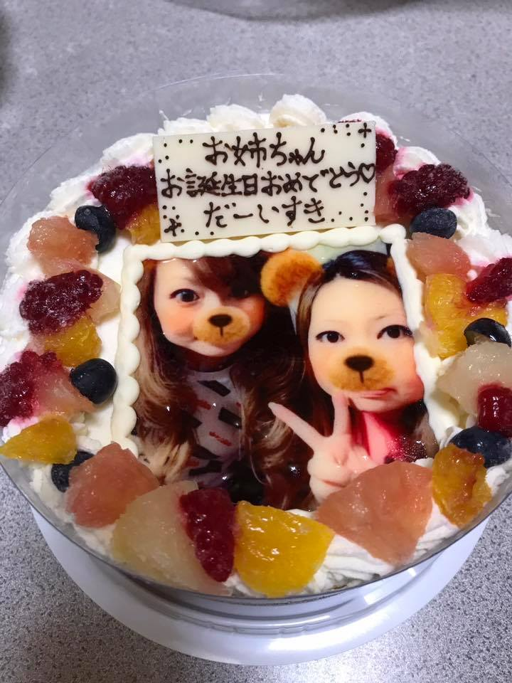
一緒に過ごせた時間は、長いようで短いけれども
今は安らかに眠ってください。
一度しかない人生で、あなたが私の弟でいてくれて
本当に良かった。
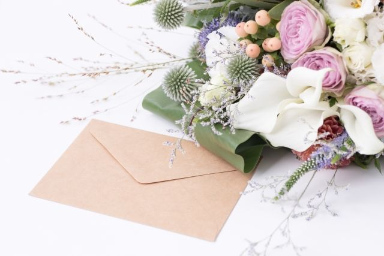
あなたも、伝えられていない想いを、
手紙に書いてみませんか？
あなたが、
たくさんの大切なことに
気付くためにも。
そして、
あなた自身が、
前に進んでいくためにも。
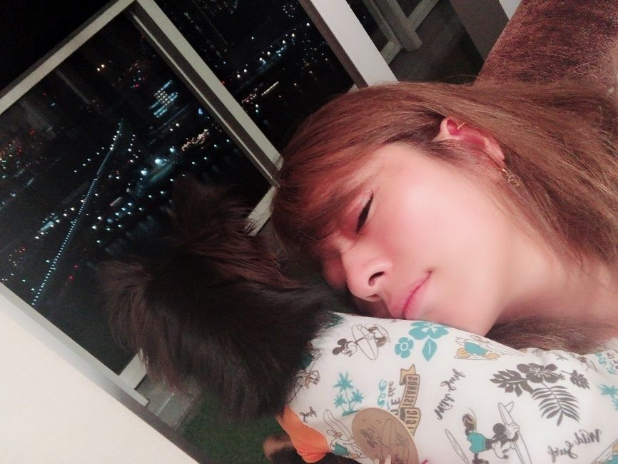
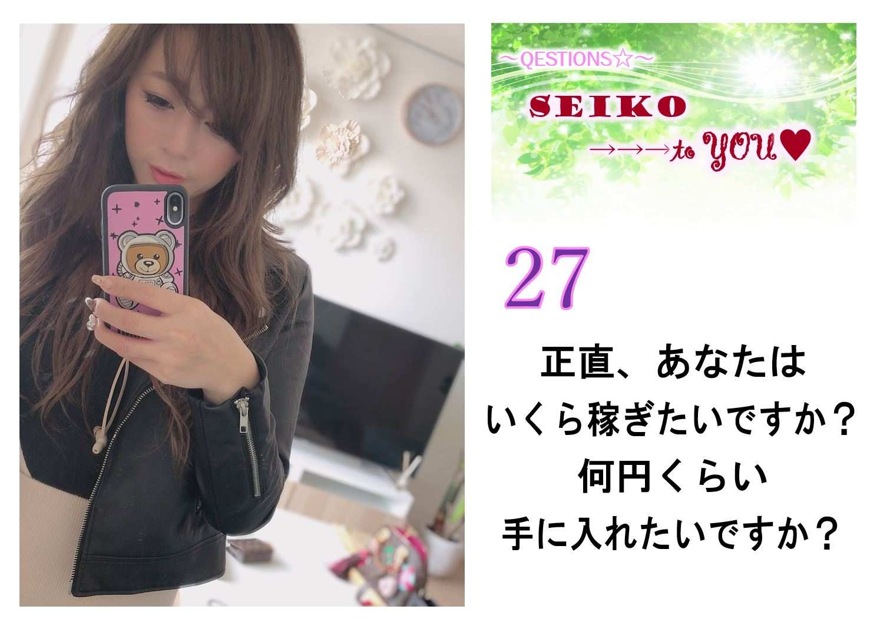
２７ 正直、あなたはいくら稼ぎたいですか？何円くらい手に入れたいですか？
ここに来て、相当、ストレート！ 現金な話！
やっぱり、いいじゃないですか。成功するって言えば、そういう話も必要です。
正直、あなたはいくら稼ぎたいですか？
そうそう、正直に！ 何円が正解、なんてものはありません。
これまでの話の流れから、
「もう、いくら稼ぎたいのかだなんて、どうでもよくなっちゃった......」
そんなことを感じた人も......いるかも？
それも答えのひとつかもしれませんね。
ただ、「お金」や「これだけ稼ぎたい！！」という気持ちは、今の時代を生きていく大きな大きな力にもなります。
さあ、自分が思う金額です。
自分に正直な金額で構いません。
ただ、それが力強く生きていく原動力になりますからね。
こっそりで構いませんから。
ここで自分自身に、自己申告してみることにしてください！
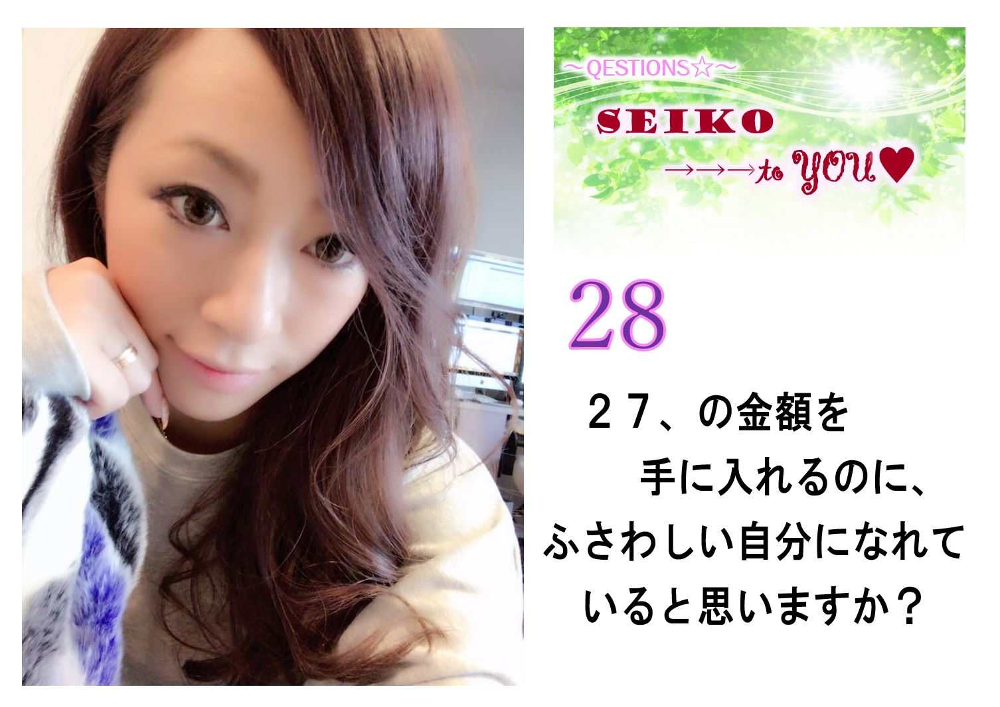
２８ ２７、の金額を手に入れるのに、ふさわしい自分になれていると思いますか？
器ができていないとお金は手に入れられない。そんな表現をあなたも聞いたことがあると思います。
でも、器って、何？ 「人の器」って、目に見えないものだし、「この条件を満たしていることが、まずはこれだけの器の条件」だなんてチェックリストがある訳でもないですよね。
２７、の金額を手に入れるのに、ふさわしい自分になれていると、
「思う」のであればそう思えるし、
「思えない」のであればそう思えない。
まずは思い込みや、自信が果たしてどうなのか？ って話だけなのかもしれないですね。
「思う」という人は、その自信を持ち続けられるようにしましょう！ ただ、自信があるだけで何もしなければ、それは「自分はホームランが打てる！」と思ってバッターボックスに立とうとすらしていない野球選手のようなもの。
あなたの真価が問われるのは、行動できるかどうか？ 行動からどんな結果が出せるか？ということですからね！
それを忘れずに。
「思えない」という人は......ただ「思う」か「思えない」か、の紙一重の違いだけなのに、なぜ「思えない」のか？
その答えを、自分の心に問いかけて、自分なりに見つけてみることにして欲しいなと思います。
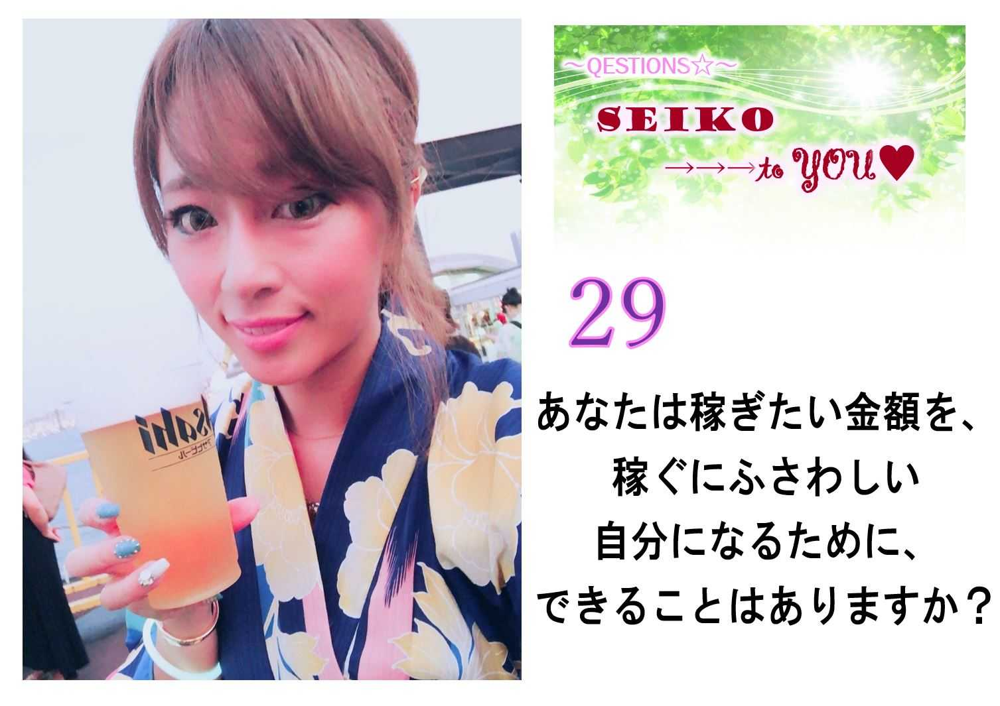
２９ あなたは稼ぎたい金額を、稼ぐにふさわしい自分になるために、できることはありますか？
先ほども言いましたが、まずは、ふさわしい！ と思い込めるか、自分で自分に自信を持てるか、ということですからね。
これから稼ぐために、例えばトレードを勉強することにしたとしましょう。
「絶対に、稼げるようになる！ それまで辞めない」と思えた人は、ちゃんと稼げるようになります。
「勉強はするけど、でも自分なんかが、本当に稼げるようになるのだろうか？」と思ってはじめた人は、何かでちょっとつまずくと、「あ、やっぱりムリだったな」と思ってあきらめてしまいます。
ただ、闇雲に自信を持って欲しいと思っているか？ というと、それもちょっと違います。
「あなたが稼ぎたい金額」であるということを大前提とさせていただくことにしました。
１千万円くらいがちょうといいとか、１億円だなんて大きなことを言っちゃダメだとか、１０万、２０万、５０万、１００万......それくらいの金額も低すぎてダメだとか、そういうことをこちらで決めることはしませんから。
あなたが心の奥底で望んでいることは、ちゃんと成し遂げる力がある。そう自信を持つことです。
もしあなたがその自信、今は持てないのなら、自信を持つためにこれからどんなことができそうですか？
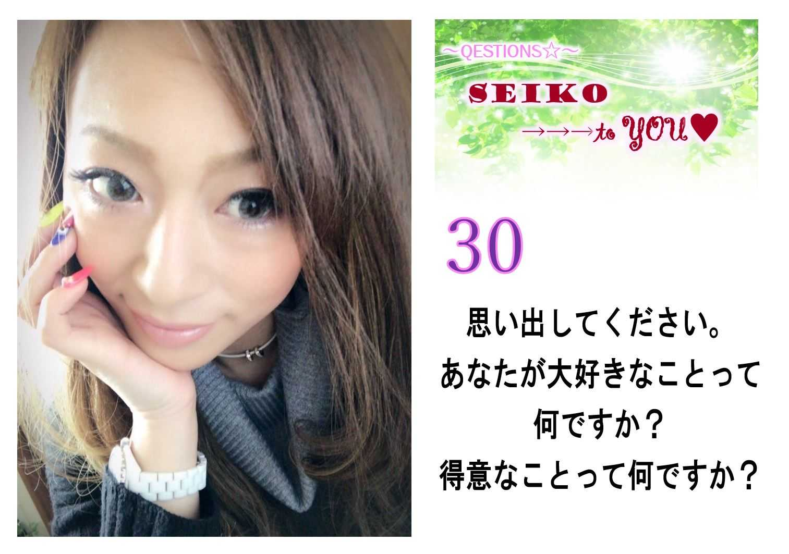
３０ 思い出してください。あなたが大好きなことって何ですか？得意なことって何ですか？
覚えていますか？
５、や１０、のところで同じようなことを聞かせていただきましたね。
そのときは「めっちゃ元気なこと！」だなんて、一瞬「そんなことでいいの！？」と思うようなことで、大丈夫！ ともお話ししました。
ここに来て、再度思い出して欲しいと思います。
あなたが大好きなことって、得意なことって、どんなことがありますか？
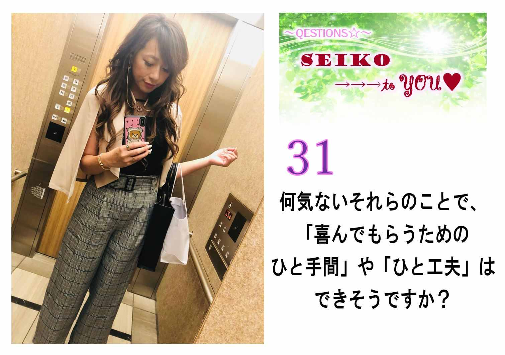
３１ 何気ないそれらのことで、「喜んでもらうためのひと手間」や「ひと工夫」はできそうですか？
稼ぎたい金額を、稼げるようになるには、まずは自信！
......だなんて、それも大事なのは分かるけど、もっと具体的にはどうすればいいの？
そうですね、具体的にどうすれば？ と聞かれると答えは山のようにあります。
ですが、何か自分自身がものすごいことをして、それをアピールしなきゃ！ と間違った思い込みをして焦っている人が多いような気もしています。
たくさんお金を稼ぐには、どれだけすごいか、周りに思い込ませることが必要、だなんてね。
いえいえ、すごそうに見せるよりも、「人として大事なこと」をきちんとやる方が、私ははるかに大切なように思います。
例えば仕事で、何か頼まれごとをしたら、頼まれた以上にちょっとでも依頼した人に満足してもらうために、何かひと手間をかけることにする。ひと工夫することにする。そんなことです。
何かあったら表にまとめるのが得意、という人は、チームで仕事をするときにみんなが常に分かりやすく動けるように、誰もが一目で分かる表を自主的につくる。
料理が好きな人は、大事な仕事の用事で誰かと会ったときには、手作りのお菓子を渡すようにする、そしてただ渡すだけじゃなくてそれで場の雰囲気を和ませて、お互いコミュニケーションを取りやすくする。
あくまでも、例ですよ！ 絶対に、こうしてください、ということではありません。「あ、こんなことでいいんだ」という参考に。
ちょっとだけ、気を利かせるんです。相手の負担にならずに、さりげなく、でも、相手に満足してもらえるようなこと。
そして「またお会いしたいですね」「また一緒に仕事がしたいですね」と言ってもらえるように、そう思っていただけるようにすることがとても大事。
「そんなひと手間も、かけたくない......」と思えてしまうのなら、いえ、挙げてもらったのは、そもそもあなたが大好きなものだったはず。得意なものだったはず。
そしてあなたは、望む成功を手に入れたかったはず。
にも関わらず、そんなちょっとしたひと手間すらも誰かのためにかけたくないのであれば、もしかしたらあなたは何かを、自分の心の中で嘘をついてしまっていたのかもしれません。
大好きだって思ってたことが、実は大好きじゃないことだったのかもしれませんね。
成功したいと思っていたけれども、もしかしたらあなたが一度思い描いた成功は、あなたが心から望んだ成功や幸せのスタイルとちょっと違っていたのかもしれませんね。
もしそれに気付いたのであれば、もう一度あなた自身の心と丁寧に向き合ってみることにしましょう。
話がちょっとズレてしまいましたが、あなたが望む金額を手に入れられる、それにふさわしい自分になりたい！ と思ったとき。
まずはやることは、誰かのためにちょっとひと手間をかける、ひと工夫するといった、何気ないこと、かつ人として大切なこと。そんなことでいいんですよ！
それでいろんな人との縁ができて、人脈になって、その中で仕事の経験をすることができ、すると今度はその経験が実績となり、また新たにさらにステージが上の人を紹介してもらうなどして人脈が広がっていき、そこでの仕事が経験となり......と、どんどん繋がっていきますから。
誰かに喜んでもらうための、ちょっとしたひと手間。ひと工夫。
あなたが大好きなことや、何気ない得意なことを、ちょっと活かしてやればいいだけ。
そんなひと手間、ひと工夫。あなたにはできそうですか？
３２ あなたは、これから「失敗」する覚悟はできていますか？
未だまだ見ぬ成功に向けて歩きはじめたのなら、絶対に避けて通れないのが「失敗すること」。
失敗する覚悟がなければ、成功することなんてできません。
一度お話しした野球選手の例でここでもお伝えすると、ホームランを打ちたい、ホームランを打てる自信がある、と言いながら、ピッチャーの投げるボールを見て、「いや、どうやらまだ自分の出番ではないようだ」なんて言って、ベンチに座ったままで結局何もしない人。
あるいは「自分がホームランを打てないのは、ピッチャーがあんなボールを投げるからだ！」なんて言って、見当違いな文句ばかり言って他人のせいにしているだけの人。
本当に、こういう人がすごく多い。失敗するかもしれないけれどもそれでも前に進まないと、絶対に成功なんてできませんから。
成功したいあなたへ。
あなた自身が望む幸せや成功を、手にしたいあなたへ。
あなたには、これから「失敗」する覚悟はできていますか？
３３ あなたは、その失敗から「学ぶ覚悟」「再度、自分を見つめ直す覚悟」はできていますか？
「失敗は、成功のために大切です！」という話、するじゃないですか......そうするとですね、もう、ひたすら失敗を繰り返すような人っているんです！
本当にね、「失敗する」ってインプットしたロボットみたいに！
そして失敗したことを指摘すると、「いえ、成功のためには失敗は大事なんです」なんて言って、失敗したことを反省しようともしないっ！
失敗から、何も学ぼうとはしない......
「失敗すること」そのものが本当の目的になってしまったみたいに。
いえいえ、人間なんですから。もうちょっと、考えましょうよ。
「失敗する」ってインプットして、それを１０回繰り返せば、成功する、なんてことじゃないですよ。
あくまでも本当に目指しているものは、あなたが望んでいる夢の達成とか、幸せとか、成功を掴むとか、そういうことだったはず。
そして、それに向けて進んでいくのであれば、失敗は避けて通れないってことだったはず。
決して、失敗すること、そのものを最終到達点にしたい訳じゃないですよね？
こうして書いてみたら本当に冗談みたいに聞こえるかもしれないけど、でもこんなロボットみたいな、ひとつインプットしたらそれしかできなくなっちゃうような人、増えている気がします......
「失敗も大切です」と言うと、失敗することしか目に入らなくなってしまうような人。そんな行動しかできなくなってしまうような人。
これからの時代、これで大丈夫なのかな？ 心配だわ......
あなたがこれから失敗したとき、「失敗が大切だから」と言って開き直るのなんて、誰も望んでないですからね！
失敗したら、その失敗を受け止めましょう。
そのためには、自分のダメなところや弱さを、ちゃんと受け止める心の強さが必要になりますね。
そして、失敗から学ぶことは、驚くほど多い。どこかでちゃんと気持ちの切り替えをして、それからは学べることに集中すること！
思わぬ失敗をして、うまくいかない経験をして、そこで「自分が目指していたものは、本当にこれで良かったのかな？」と思うこともあるかもしれません。
そのときは、自分の心に無理をせずに、ちゃんと自分と向き合うことにしましょう。
冷静になって考えると、最終目的は変えなくても、そこまで行く手段を間違っていたことに気付けるかもしれません。
ここは、ひと踏ん張りのときなんだ！ と思って、望む成功を手にするために、ここで何があっても忍耐強く乗り越える覚悟ができるかもしれませんね。
失敗すること、そのものを最終目的にして、その「失敗」に向けて一直線に突き進んでしまうような、なんだかおかしなことになってしまわないようにねっ！
あなたは、失敗することだけじゃなく、
失敗から「学ぶ覚悟」「再度、自分を見つめ直す覚悟」はできていますか？
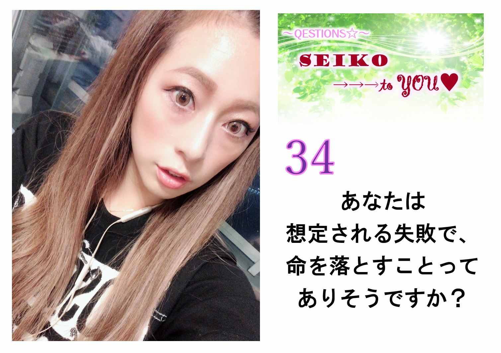
３４ あなたは想定される失敗で、命を落とすことってありそうですか？
この質問に、「はい」と答える人は、この電子書籍を読んでいる人の中にはおそらくいないと思います......
いえ、もし、いたとしたら！
よっっっっっっぽどの理由がない限りは、今やっていることからは手を引きましょう！
人生一度きり。そして、人生は短いようで長期戦も大切だから！
絶対にあなたがそれをやらなきゃならない理由なんて、おそらくあなたが生きていられることに比べたら、ちっぽけな理由だから。
......って、一部の特殊な事情を持っている方へのお話からはじめてしまいましたが、９９％の人にとって、想定される失敗で、命を落とすようなことはないと思います。
だったら、思い切って、いろんなことにチャレンジしてみましょうよ！
あなたを応援してくれる人も、たくさんいるんですから。これまでの本の内容で気付いたことでしたね。
そして、そんな応援してくれる人たちのためにも、失敗したとしても、その失敗をバネにして、どんどん前に進んで行ってください。
あなたは、想定される失敗で、命を落とすことってありそうですか？
答えが「ノー」なら、あとは自信と希望とを持って、前へ前へと進んでいきましょう！
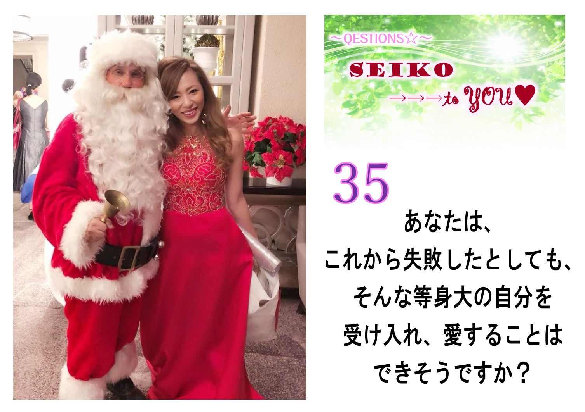
３５ あなたは、これから失敗したとしても、そんな等身大の自分を受け入れ、愛することはできそうですか？
また、最初の質問の方に戻って来ましたね。
前に進むために必要になってくるのは、「自分なら、大丈夫！」と思える「自信」。
でも、何もできてもいないのに、そもそもチャレンジすらしてないのに、失敗しても受け止める強さもなく、それでも「自分も、できる！」と言い続けているのだとしたら？
それは本当の自信じゃなくて、「過信」、もしくは「勘違い」ということになってしまいますね。
本当の自信は、例えダメなことがあったとしても、失敗したとしても、ちゃんと受け入れて、それでも「大丈夫」って思えることだから。
そう、等身大の自分を受け入れ、愛すること。それが「本当の自信」が湧き出る「源泉」になりますからね。
もし、ここまで来て、この質問に「イエス」ときっぱり言うことができないとしたら？
まだまだ、等身大の自分をちゃんと受け入れて、自分で自分を愛することは、どうもできなさそう......と思えたのなら。
むやみにいろんなことに挑戦してみるのは、一度、立ち止まってみた方がいいのかもしれません。そんな状態で歩み始めても、きっと力強く前に進んでいくのは難しい。
大丈夫。焦ることはありません。じっくり時間をかけてもいいんです。
またこの電子書籍を読み返してみたりして、自分で自分を好きになること、自分自身を愛せるようになることからはじめてみることにしましょう。
あなたは、『本当の自分』に気付いて、自分自身を愛することができていますか？

３６ 最初の質問に戻りたいと思います。あなたの自己紹介をお願いします！
自己紹介をする目的は、そう！
この電子書籍では、「今の自分を、自分自身が知るため」でしたね！
ここまで読み進めてみて、新たにあなた自身について知ったこと、気付いたこと。
たくさんあったのではないでしょうか？
また、箇条書きにして行ってもいいし、
今度はじっくり自分自身と向き合うために、文章にして行っても構いません。
あなたのための、あなたによる、自己紹介です。
さて、もう一度自己紹介を考えてみることで、何か気付いたことってありますか？
３７ あなたの夢って、何ですか？ 他の誰でもない、あなたの夢って何ですか？
こうしてあなたにいろいろお聞きしてきた質問も、これで最後です。
あなたの夢って、何ですか？
最初の方で一度、聞きましたね！
でも、このときに、「あ、私自身の人生を歩むための夢じゃなかったな」と気付いた人もいるかもしれませんね。
これまでの本を読んで来て、またちょっと考え方が変わった方もいるでしょう。
ここでもう一度お聞きしたいと思います。
あなたの夢って、何ですか？
私はそのときは考えても分からなくて、そんな自分が情けなくて涙が溢れましたが、あるときこんなことを言われたんです。
「お前、将来マダムシンコみたいになりそうだな」
そう言ったのは、例のパソコン教室の社長でした。
マダムシンコって、大阪で活動してた（今も活動している）、ちょっと派手めのマダムです。
それが、私の心にピン！ っと来たんです。
そうだ、私、マダムシンコみたいになろう！
私、マダムＳＥＩＫＯになろう！！
マダムシンコを超えるマダム、マダムＳＥＩＫＯになるんだ！
当時の私と言えば、マダムとはもう、程遠い状態です。
なんせ、生活保護を受給していて、そのためにこのパソコン教室に通っていたくらいでしたから。
でも、こんな冗談みたいな「夢」が、私の人生に明るい光を照らしてくれました。
今でも私は、このマダムＳＥＩＫＯが何者かは、分かっていません。
どこまで行けばマダムＳＥＩＫＯになれるのかなんて、それは本人にも分かってはいないんです。
それでも、私は「夢は何ですか？」と聞かれたら、今でもこう答えます。
マダムＳＥＩＫＯになるのが、私の夢。
自分でも訳の分からない夢だと思うけれども、私はこの夢に、幾度となく救われました。
その後は弟の自殺もあったし、マダムＳＥＩＫＯになろうと決めたものの、すぐには稼いだり、ましてやマダムになることなんてできなくて、苦しい思いもたくさんしたけれども、
「私は、マダムＳＥＩＫＯになる」という夢を支えに、歯を喰いしばって乗り越えて来ました。
ここで、逃げちゃいけない。
子育て中だから、だなんて言い訳をしない。
私は、マダムＳＥＩＫＯになるのだから。
勉強の仕方すら分からない私が、パソコン教室に通いはじめて、今度はトレードの勉強なんてしてる！ そんな自分になんだか笑えたけれども、それでも投げ出さずにいれたのは、マダムＳＥＩＫＯになるという夢があったから。
その後はトレードで成果が出せるようになり、自分がトレードをするだけではなく今度は教えることもはじめ、そこから繋がって暗号通貨にも取り組みはじめることに。
とは言っても暗号通貨なんて本当によく分からないから、自分が分かるまで調べるしかない。
今度は暗号通貨の勉強です。そして分かるまで調べて情報発信をしていたら、
「暗号通貨、興味はあるけど本当によく分からない。けれども、聖子さんの説明はものすごく分かりやすい」と言ってくださる方が増え、そんな方がＬＩＮＥ＠をどんどん広めてくださり、あっという間に読者さんは何万人にも増えていきました。
そうすると、今度は暗号通貨関連のミートアップやカンファレンスに参加することが増えて来ます。そこでは英語で話しかけられることもよくありました。
海外のカンファレンスに、招待されて参加したことも！
そうなると、こう思えて来ちゃうんですよね。
「英語、話せるようになったら、いいなあ......」
中学すらまともに行ってない私が、今度は英語が喋れるようになりたいと英語の勉強をはじめたんです！
息子たちに「そんなことすら分かってなかったの？」だなんて言われながら。
もう周りの人もビックリするくらい、基礎の基礎も全く分からないけれども、それでもいいんです、喋れるようになりたいんだから。
勉強なんて全然しなかった私が、今になって勉強してる。自分でも、人生って不思議だなって思っています。
そして、私の人生は、それまでのどん底の状況からグイグイと上昇気流に乗りはじめました。
自分でもあまりに壮大だと思えるくらいのこの大逆転の物語は、今でも幕を閉じることなく、どんどん面白いことになりながら続いています。
それも、あのとき「私は、マダムＳＥＩＫＯになる！」という夢を持ったからでした。
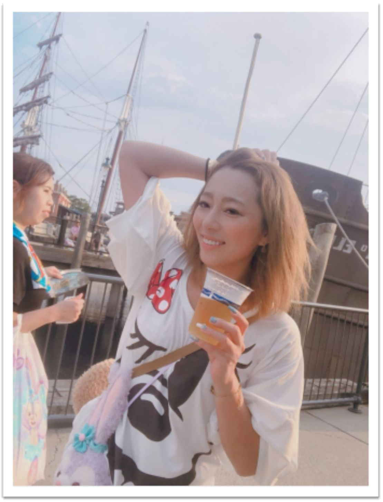
だから、夢ってね、
自分の気持ちに正直であれば、他の誰と比較することなく、どうして自分がその夢がいいって思ったのか？ なんて特別な理由も必要なく、
自分が「これだ！」って心でしっくりきたものを夢にして、それを追い続ければいいんじゃないのかな？ と、私は思います。
私の夢は、マダムＳＥＩＫＯになること。
この夢が私の人生に明るい光を照らし、私自身もこの夢に救われてここまで来ることができました。
さて。
あなたの夢って、何ですか？
他の誰でもない、あなたの夢って、何ですか？
ちょっと一息 ～コーヒーブレイク～
あなたへの、最後の質問まで辿り着いたところで、これまでの内容を一気に振り返ってみることにしましょう！
１ あなたの自己紹介をお願いします！
２ １、で書いた自己紹介を見てどう感じますか？
３ あなたの夢って、何ですか？
４ ３、で挙げた夢。誰の人生を歩むための夢ですか？
５ あなたにとって楽しいこと、大好きなことって何ですか？
６ あなたにとって嫌なこと、ツラいことって何ですか？
７ なんでもポジティブ病！ もしくはなんでもネガティブ病！ になっていませんか？
８ 最近大声で笑ったことは？泣いてしまったことは？ 怒ったことは？ 嬉しかったことは？
９ あなたがかけてもらって嬉しい言葉は？
１０ あなたが得意なこと。当たり前のように他人よりできること。どんなことがありますか？
１１ 等身大の自分をきちんと受け入れて愛せていますか？
１２ あなたには憧れの人がいますか？
１３ 普段よく会う人や連絡をしている人を１０人挙げてください
１４ １３、で挙げた人はあなたにとってどういう人ですか？
１５ あなたはこれからどんな人に囲まれて生きていたいですか？
１６ あなたにはコンプレックスやトラウマがありますか？ それに関する辛い思い出ってありますか？
１７ ここからあなたの人生大逆転の物語がはじまります。さて、何をしますか？
１８ 未来のあなたから手紙が届きました。どんなことが書いてありますか？
１９ 未来のあなたが、過去のあなたに手紙を書くことにしました。どんなことを書きますか？
２０ そんな未来に向かって、あなたがやりたいこと、やるべきこと、決断することってありますか？
２１ あなたが決断して、未来に向けて進みはじめたとき、手紙をくれた人がいました。どんなことが書いてありますか？
２２ 普段、本当は伝えたいと思っているけれどもなかなか伝えられていないことってありますか？
２３ ある日届いた手紙を開封すると、そこには１０年前に戻れるチケットが入ってました。さて、何をしますか？
２４ 今度は届いた手紙を開封すると、１０年後の未来に行けるチケットが入ってました。さて、何をしますか？
２５ 手紙を開封すると、謎の脅迫状が入っていました。
「あなたはあと３日後に死にます。覚悟しておけ」あと３日の命だとしたら、あなたは何をしますか？
２６ 今、目の前で書き出したこと。今からでもやりませんか？
２７ 正直、あなたはいくら稼ぎたいですか？ 何円くらい手に入れたいですか？
２８ ２７、の金額を手に入れるのに、ふさわしい自分になれていると思いますか？
２９ あなたは稼ぎたい金額を、稼ぐにふさわしい自分になるために、できることはありますか？
３０ 思い出してください。あなたが大好きなことって何ですか？得意なことって何ですか？
３１ 何気ないそれらのことで、「喜んでもらうためのひと手間」や「ひと工夫」はできそうですか？
３２ あなたは、これから「失敗」する覚悟はできていますか？
３３ あなたは、その失敗から「学ぶ覚悟」「再度、自分を見つめ直す覚悟」はできていますか？
３４ あなたは想定される失敗で、命を落とすことってありそうですか？
３５ あなたは、これから失敗したとしても、そんな等身大の自分を受け入れ、愛することはできそうですか？
３６ 最初の質問に戻りたいと思います。あなたの自己紹介をお願いします！
３７ あなたの夢って、何ですか？ 他の誰でもない、あなたの夢って何ですか？
ここまで来ると、自分と向き合って自分のこと考えるだなんて、普段頭の使ってない部分をたくさん使ったから、もう頭から煙が上がりそうです！ という人もいそうですね。
最後まで読んでくださり、本当にありがとうございました！
......って、あれ？
この本のタイトルって、
本当の自分に出会うために！
成功哲学よりも大切な３８のノート
って、「３８」じゃなかったっけ？
まだ、３７項目しか上がってないけど......？
そうそう、しかも、ここでですね、ちゃんとした本だったら、「あとがき」とか「おわりに」、「エピローグ」なんて呼ばれるものが最後の最後にあるのかもしれないけれども......
この本は、私があなたに質問をして、あなたの声を聞かせていただくことでここまで進めて来ましたね。
なので、この本は清水聖子が書いたようであり、あなたと一緒につくった本でもあります。
これからの「あとがき」は、ぜひ、あなたに書いて欲しいと思います。
そして、その「あとがき」が、本当の本当の最後の、３８項目なんです。これがきっと、あなたにとって一番重要な項目になると思います。
と言っても、そのあなたが書いた「あとがき」は、あなたがあなたのために書くものですから、一人で自分しか見ないノートに書いたり、書き終えた後はこっそり胸の内に仕舞い込んでいただいても構いません。
もちろん、誰かに「読んで読んで！」と公開するのだってＯＫ！
どちらにしても、一度は書き出していただきたいな、と思います。
この本を一冊読んで、ひとつひとつのことに自分自身を見つめていくことで、気付いたことがきっとたくさんあると思いますから。
そして、また時間を置いて読み返すことで、きっと違った気付きがたくさんあるはずです。
「なんだか、最近、心が乾いてきてしまっている気がするな......」なんて思ったとき、またふと思い出してみたときなどに、ぜひ何度も読み返してみてくださいね。
さて、最後はペンをあなたにお渡しします。
心のこもった「あとがき」、お願いしたいと思います。
あなたは自分自身の中に、どんな大切なものを見つけましたか？
この本を読んで、どんなことを思いましたか？
■□■━━━━━━
□■┛ あとがき
■┛━━━━━
━
━
３８
あなたはこの本を読んで、どう思いましたか？
どんな大切なものを見つけましたか？
自由に書き進めてくださいね！